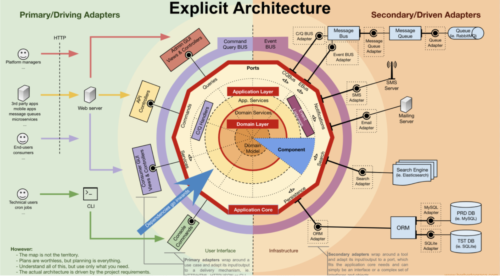
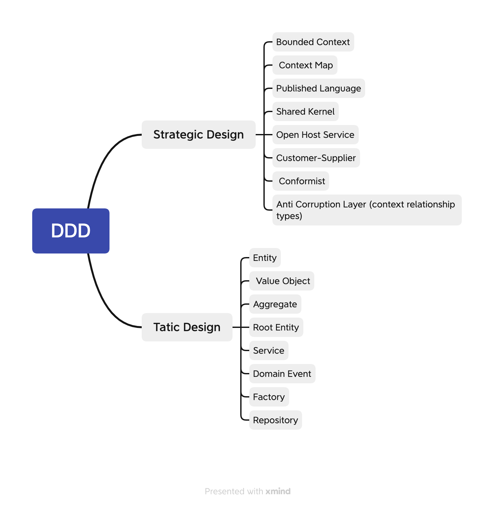
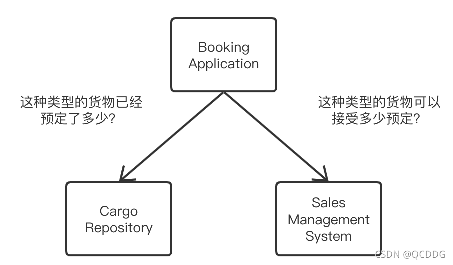
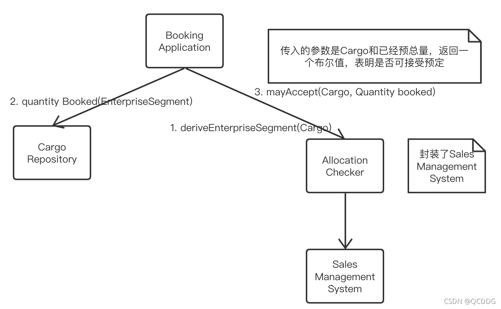
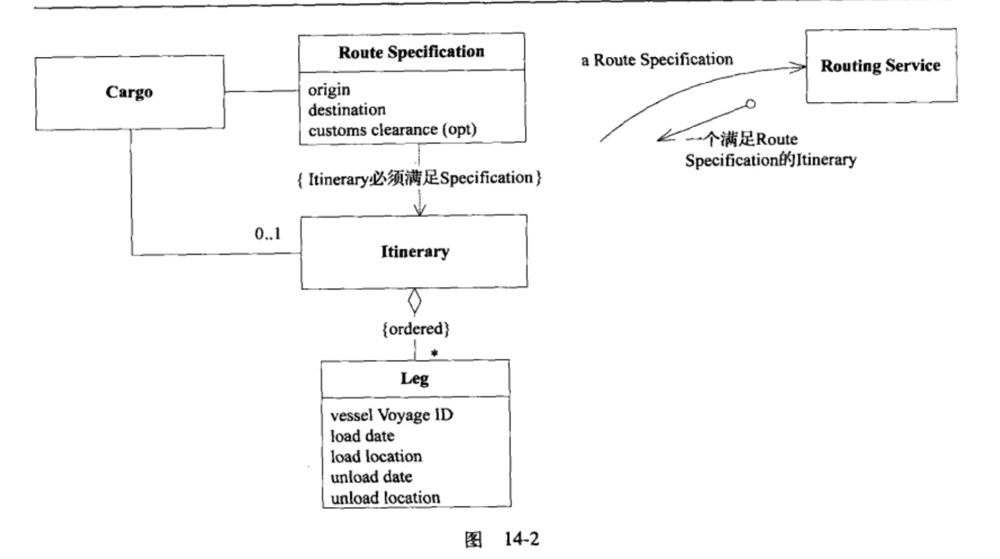
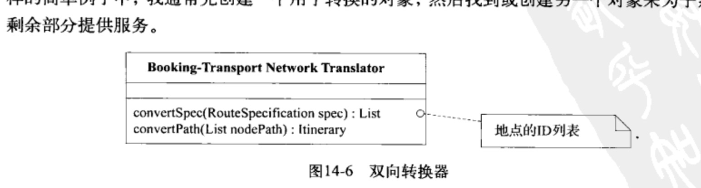
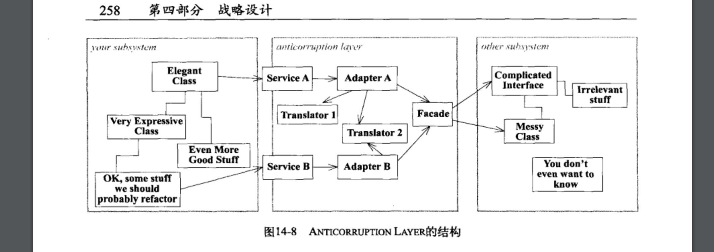
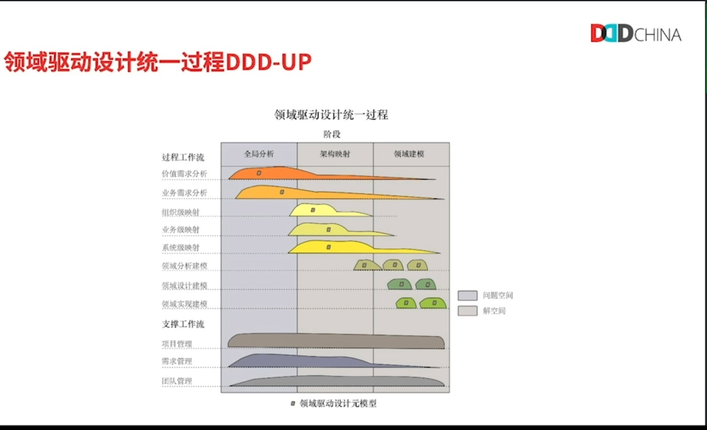
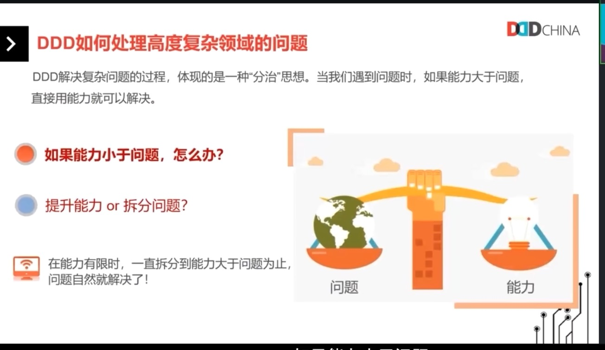
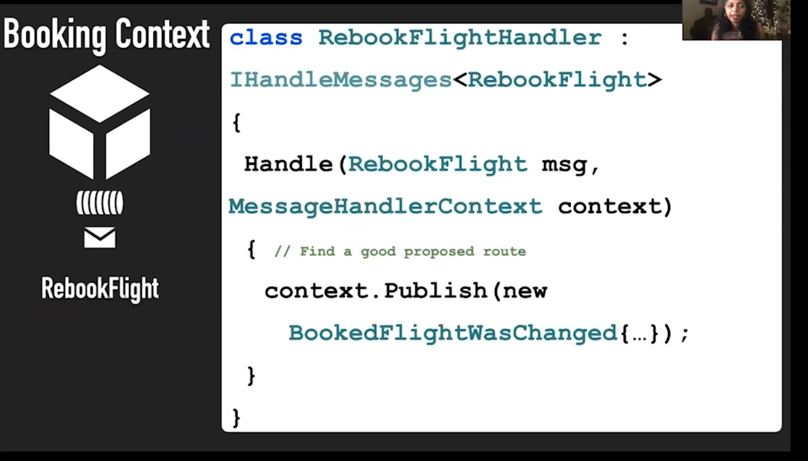

领域驱动设计汇总
总结
DDD 主要是面向对象范式的高级应用。
分治、分层、抽象、演化是架构设计的4大原则。
- 分治是为了让复杂度变小，而且围绕单一的中心概念具有内聚，又通过边界区别彼此。在DDD中，在解决规模性问题，防止模型出现分裂-矛盾和重复的时候，使用战略设计：上下文（支持边界，天然为微服务服务，这里的上下文边界也是组织架构的边界，也强调团队管理）、精炼（围绕核心域的种种动作）、大型结构（分层在这里被强调）。战术设计则是围绕各种职责类型，强调程序的构造块。
- 分层 主要依赖于大型结构和模型驱动设计提到的 flexible layered architecture。
- 抽象意味着永远留有余地，核心越薄越好，这也是精炼要求的。
- 演化在这里则体现为，允许系统设计不断通过重构来精化模型。
在 DDD 的原书里面，为了防止模型出问题，才逐渐引入战略设计。
但别的 DDD 书籍里面，作者们都主张直接从战略设计入手。
DDD 官网


真实的架构是由项目需求驱动出来的。
- 左半段最外层叫 interface 层；右半段最外层叫 infra 层。左半段的 bus 是 command query bus，右半段的 bus 叫 event bus。
- Ports 有
- Queries
- CQBus、EBus
- Notification：
- SMS adapter
- Email adapter
- Search
- Persistence
- Services
- Commands
- 外围的 Controller 有：
- Admin GUI Views & Controllers
- API Controllers
- Consumer GUI Views & Controllers
- Console Commands
- C/Q 有自己的 Handler，Event 有自己是 listener。
- Application Layer 就是有 App Services。
- Domain Layer 有两层：
- Domain Service 分离出来
- Domain Model 层：在实现时“一个模型”指的是“一个类型”：Entity、Value Object、Aggregate。
- 按照象限划分，从 handler/listener 开始，一直切分到底的组件化。
链接汇总
- DDD as Code：如何用代码诠释领域驱动设计？
- 对内 DDD 对外 API 之—对外 API 的设计理念
- DDD系列第四讲：领域层设计规范
- 业务中台构建策略：划分子域、上下文、事件风暴、需求结构化和能力可配置
- 学而思网校直播课堂架构演进之路
- 万字长文，结合电商支付业务一文搞懂DDD
- 谈谈领域建模
- 使用 DDD 指导微服务拆分的逻辑
- 欧创新：深度解析DDD中台和微服务设计
- 领域驱动设计(DDD)实践之路(四)：领域驱动在微服务设计中的应用
- 两个字搞定DDD（领域驱动设计），DDD脱水版（一）修订版
- 基于 DDD 思想的酒店报价重构实践
- 携程技术：国内酒店交易DDD应用与实践——代码篇
- DDD在经销商的应用
设计拆解


DDD.xmind

核心概念解释
- 限界上下文：领域概念得以确立，不存在二义性的一个界定范围。是对职责实现的划分，是对动态业务流程的静态划分。
- 领域划分：
- 核心域：企业内部赖以成功的竞争优势来源，通常意味着聚焦关注，自身开发。核心域要稳定，要清晰。
- 通用域：通用子域可以被独立为第三方服务，使用范围非常广。
- 支撑域：支撑子域是自建服务或企业系统里面，非核心域的次要部分，它是在确立了核心域以后才得以确立的。
- 聚合：高度相关的一组对象的边界，必须从根部遍历。
DDD 原书
- 原书的两大核心主线：
- 通用语：跨越团队职能，无需翻译
- 模型驱动设计：在原书里指的是分析设计和实现绑定在一起的实践方法
- 原书五大板块：
- 柔性设计
- 战术设计
- 精炼
- 大型结构
- 上下文


这本书讲的一个简单真理是：建模即设计，设计即建模（modeling as design, design is modeling）。
设计是不可回避的，在高度复杂业务的背景下设计者必须懂得控制复杂度。很多人都声称“懂领域”，但并不真的懂领域的实质结构，而只是懂领域的表面。domain logic 是杂乱无章的，只有有真切的联系的模型，即 domain model，可以被称为实质结构。懂得实质结构要求我们真的懂得领域模型，而这些模型是建模而来的。建模并不能只通过简单的头脑风暴，还需要运用一些建模技术。概念建模-模型推导是这本书大量介绍的技术的实质。缺乏这些技术，无法产生实质上有意义的模型。
有意义的模型是正是很多人渴望的“所见即所得”的东西，既可以拿来在白板上与领域专家讨论，也可以拿来。领域模型是一种通用语言，可以成为连接不同角色的纽带。
这些技术非常庞杂，所以作者建立了一套体系，使用一系列的词汇来解释建模所需要采取的设计活动。
本书认为好的领域模型并不是“建模-实现”的产物，而是实现后才被发现的真正的好东西。从我个人的经验来看，模型真正动起来以后，他们之间的依赖和互动关系才能从高深莫测的静态迷雾中显露出来，我们这时候才能得到 better models。
很多大师都经历过失败，但只在书中讲自己无所不能的一面，这让这个理论并不真实。从失败中学习可能更重要。
按照作者的观点（《软件方法》里也有这一观点）：满足组织的需求是能够处理好核心复杂问题，而且能够持续演进，这才是好的软件。
作者在前言里举了几个例子，很多交易系统最初设计时非常简单，并不严格采用领域逻辑设计方法，注重对通用语的收集。于是，第二版本非常难产。相反，持续被精化的领域模型是持续演进架构中能够被持续扩展的基础，这件事可能越来越容易而不是越来越难。还有，如果开发人员不能把不断迭代的业务分析整合进代码中，系统构建还是会失败。
本书阐明了两个前提：
- 软件焦点是领域和领域逻辑，
- 复杂的领域设计应该基于模型。
领域驱动设计是一个设计方法论，但确实有必要依托于过程假设。本书基于两个过程假设：
- 基于某种迭代式开发：主要是敏捷流程。这为架构演进打下基础。
- 迭代式开发中开发人员和领域专家要有密切的互动：领域驱动设计的实质是吸收知识，产生一个反映深层次知识聚焦关键概念的模型。
本书作者认为，极限编程的核心思想是：人们可以通过重构来改进设计，而且可以迅速重构。
在本文中出现的系统业务域：发票、贷款、货运、库存管理和保险。
第一部分 运用领域模型
开发复杂系统需要用到的知识令人望而生畏。而模型是解决大脑超载问题的工具。模型并不仅仅是图，而经过选择和设计产生的抽象。所以领域模型并不一定符合现实，比如现实之中并没有时间和事件，但领域模型里就可以有。
模型在 DDD 中有如下作用：
- 模型和设计的核心相互影响。我们可以基于模型来解释代码，也可以基于模型来解释产品。
- 模型是团队所有成员使用的通用语言的中枢。模型可以拿来和领域专家进行沟通。
- 模型是浓缩的知识。
软件的核心是解决领域相关问题的能力。但大部分人都不愿意直面解决这些问题所需要的领域知识，转而去做一些“提高技术能力”、“框架性”的工作。这是本书一再谈到的，高级开发人员的一种通病。
消化知识
在作者举的 PCB 电路设计的例子里，他和领域专家反复确定模型的细节，经过对信息的寻找与扬弃，增加了一些有用的信息而去掉了另一些有用的信息。到后来整个团队可以无需翻译就使用领域模型来交谈。
而在没有交谈流程的瀑布式设计流程里，设计是由单向流动的专家-分析者-开发者的流程驱动的，缺乏反馈而很容易失败。好的领域模型可以反馈领域专家的思考方式（这要求这个模型是严谨的），这恐怕是业务的实质。
在拥有领域专家的团队里，开发人员对领域的精通程度达到足以与领域专家流畅沟通即可；在没有领域专家的团队里，开发人员有时候要自己成为领域专家。
领域专家思考问题的模式可能是高度复杂的，但消化这些知识是澄清复杂概念的过程：我们可能习惯于寻找名词，但业务活动和规则也是需要我们仔细思考的领域核心概念（仔细想一想，一个领域的核心概念到底有多少种？）。
在本章中出现的第二个例子里，作者带来了如下的洞察：
- 在动宾结构中可能夹杂着一种复杂的规则，这个规则如果设计为一个模型，则成为一个可以被展示的工件（artifact、stereotype、architype or something），这对于把关键的概念搞清楚是有益的。对我的启示：所有的动宾动作里都可能藏着两类模型，一类是事件动作，一类是规则。规则是元模型。

- 领域专家们帮助研发团队们纠正了一个认知错误，航运不是“集装箱在各个地点之间运输”，而是“运货责任在各个实体之间的传递”。第一种设计几乎是所有开发者都会产生的第一种认知：具体标的物品模型的转移是易于察觉的，但业务也涉及一些权证所有权的转移，这在金融系统里是又是必须要被透彻理解的，第二种转移是深层模型。
交流与语言的使用
这是核心章节之一。
领域模型是通用语的核心。是一组概念反映了领域深层含义关系和术语。
领域专家通常有自己的沟通风格。而开发人员也有一套自己的模型表达工具-比如 UML 图。这两套沟通体系本来并不是互通的。但只要想办法构建通用语，则我们可以去除翻译。
通用语（UBIQUITOUS LANGUAGE）包括：类、主要操作、模型中已经明确的规则和高级组织规则。通用语更像是我们在《代码大全》和敏捷编程里经常提到的隐喻（metaphor），和隐喻相同的地方是，它们可以扼要地传播知识，但和隐喻不同，它指的是更庞大的语义体系。
只有通过大量地使用通用语，让沟通变得流畅才罢休。作者举了学习西班牙语和生意人发明混合语言的例子，说明坚持使用一种语言最终会让这门语言变得流利。
作者举了两个例子，一个例子使用“最小化的领域抽象”，另一个例子使用“领域模型”。第一个例子用户在谈业务功能的时候，开发者在谈工作机理，交谈中遇到很多混淆的节点，需要专门澄清。而第二个例子里，大家就只谈大家知道的名词和动作。
把模型作为通用语的支柱，意味着如果语言发生变动，模型必须发生变动，新增词汇应该新增模型，而修改语义应该重构模型（包括属性和方法），然后要改变图、表和代码的表述。
很多人讨论通用语流于空谈是因为“做不到一个团队一套语言”，这一定程度上是因为开发人员假设“领域专家并不不是抽象思考的专家，所以不一定能够理解抽象模型”。模型如果有问题，则领域专家一定能够发现，如果领域专家不理解模型，则模型必定有大问题。在大家使用的多套语言里，通用语至少是一个公分母，大家不会在使用同一个词汇的时候指代不同含义。
作者一再强调，模型不是图，图只是用来可视化模型的东西，代码是用来表达模型细节的地方。模型本质上是概念。很多时候，我们有了几幅“领域图”、“限界上下文”的图，真的是一种病。作者平时更多地使用文字来表达领域模型（非常反很多人的工作习惯），而使用图表来做补充说明。这是 six pager 的思路，而不是 ppt 的思路。
作者指出：
- 文档应作为代码和口头交流的补充。因为代码已经是程序行为的精确说明了，所以文档不要再表达重复的信息了，浪费时间。
- 文档应该保持更新。
1 和 2 简介强迫我们让文档保持在最小化的状态，没有任何文档是多余的。
作者探讨了 XP 社区的一个关键问题：他们只依赖于代码而不依赖于文档，这要求代码表现的逻辑清晰有力。这要求有一种统一的高表达性编程风格-如声明式编程。编程模型如果不具备这些特点，则编程风格可能是过程式的。
作者最后讲了“解释性模型”（即非严格 UML 图），这种图为模型提供了一种松散的上下文，对于澄清模型非常有帮助。

绑定模型和实现
这是核心章节之一。
作者首先又举了两个失败项目的例子，指出一个软件开发项目中的通病：深度探讨得出的模型，也可能是纸上谈兵的模型，无法指导设计，然后团队要维护两套概念：模型与实现。有些项目做得更差，只有一个又一个的功能的堆积，缺乏从模型出发的顶层设计。脱离了领域模型的设计，是无法合理利用面向对象的范式的。
作者开始讲了一个经典的例子：中世纪的星盘是天体模型的机械实现。可见能够正确使用面向对象范式，可以得到正确的实现。
设计和模型分离的项目里，模型和设计不同会导致程序设计的正确性无法得到保证，所以才有本章讨论的主题：要绑定模型和实现（设计是实现的一部分）。当然，模型和设计始终是两个不同的概念（这是本章节最重要的一个假设之一）。
传统的设计把分析和设计分离开来。分析模型仅仅是理解工具，设计和分析模型之间只存在松散的对应关系。真正的设计是一种“重新开始的过程”，会丢弃很多嵌入模型中的领域知识。
领域模型的发掘总是会带来层出不穷的问题，所以如果维护两套知识体系只会让它们无法相互指导彼此。所以，模型驱动开发（model-driven-design）提倡，满足两种目的：既遵循分析的要求，也使用设计的原则（所以模型并不只是简单对现实名词的提取）。模型和设计的关系需要由明确的对应，这种对应需要范式的支持，比如面向对象的编程。

逻辑范式和 OO 范式可以拿来处理领域建模问题，过程范式不可以。在逻辑范式的视角下，模型是一组逻辑规则和这些规则所操作的事实。标准模型一定要注意，不要忽略规则，配有规则的模型更准确地把核心问题把握住了。
作者接下来举了浏览器的例子：用户模型和设计/实现模型不统一，也会增加不同角色的人的学习成本。所以尽可能实现模型的统一还有提高用户体验的价值。
作者在结尾强调：
- 不能让分工阻断建模和和开发者之间的信息传递，这是模型和实现不能绑定的根因。很多团队内部
- 所有开发者必须学会使用代码表达模型。
能够做到绑定模型和实现，才是正宗的 model-driven-design，否则技术负责人还在使用“分析和设计使用两套概念”的这一传统方式。
第二部分 模型驱动设计的构造块
面向对象设计有一些总的，流行的基本纲领：
- 职责驱动设计：我们经常讲，职责要明确，边界才能清晰。
- 基于契约编程。
我们最常见的这幅图，讲的就是本部分的主题-模型驱动设计的构造块。每个构造块是一种标准模式。

这幅图告诉我们，模型驱动设计的子概念，构成了一套模式语言。原始的版本的图里是没有 domain event 的，在很多书籍里认为 event 不是 entity，但实际上在实现里它通常也是一种不易察觉的 entity，经常需要被存储起来，做事件溯源。
这个图还告诉我们一件事：factory 和 repo 是很相似的，前者强调 encapsulate with，后者强调 access with。
分离领域
本章讲了领域概念出乎意料地重要，所以需要和软件技术概念分离开来。必须使用 layered architecture 这一模式。在当代的分层架构的语境里，分层架构特指能把领域层单独区别设计的架构。
不能够单独隔离和维护领域层的一般原因是：图快，为了快速完成开发工作。把分散的核心逻辑散步在非核心层外，就导致维护这些逻辑要大量使用筛查技巧。我们在蚂蚁的实践经验告诉我们，没有一个架构上的单独的领域层，领域逻辑是不会稳定的。

分层本质上是一种 metaphore，被广泛接受的三层架构已经成为标准层。四层架构如下：
- 界面层：展示
- 应用层：简单、协调、编排、任务进度、无状态。
- 领域层：业务状态。拥有规则，对领域活动进行起码的组织。表达业务概念。状态和生命周期的流转主要隐藏在这一层。这样内聚实现得很好，领域聚焦主要看这一层内聚是不是实现得好。
- 基础设施层：技术细节
层次也不是很多，但严格强调单向向下依赖（实际上跨层依赖的情况在这幅图里还是有的，这里要强调的是“可以穿透，不可逆向”），高内聚，低耦合。
在作者举的银行转账系统的例子里，应用层的对象使用的是service，而领域层使用的则是 entity。
作者历数了分层架构的历史终出现的模式，既包括来自 smalltalk 的 mvc、application controller、model view separation 模式，然后回到四层架构：
四层架构里的 infrasctrure layer 是以类似 MailService 的形式提供服务的，但在分层框架上要实现对这一层服务的松散连接。Application 和 Domain 可以直接调用它，它也可以作为抽象基类为 Domain层的领域对象提供能力。这才是这幅图里的继承三角形出现的真意：

这幅图里还有一个继承，是从界面层指向 infrasctructure 层的。这证明 infrasctructure 是洋葱外圈层的基础。
整个分层框架，都是围绕“如何实现松散连接”来探讨的。尽管子类在上层有违常理，但哪个类反应了更多的领域知识是很重要的。框架让开发人员要能“解决复杂技术问题”，“集中精力表达模型”。
我们经常选的框架其实是架构框架，比如 JavaEE Framework 时代的框架都是架构框架。作者举了一个例子，为了让架构框架实现并且用它很好地表达领域模型，可以抛弃框架中的一些功能，例如 entity bean 只会被拿来实现一些大型对象，而领域对象的业务逻辑却可以实现为 pojo。
领域驱动设计只需要一个特定的层，就可以表达表达业务逻辑的概念。
模型驱动开发标准模式导航图里的 SMART UI 在本章出现了：把功能实现为一个个散布在界面层的功能组件，直接与共享的数据库通信。这在复杂项目里是反模式，但在简单项目里是正确的模式。这也是我们谈到的 JSP 1.0 时代很多项目的做法。作者把 SMART UI 视为复杂业务的 anti-pattern，干脆直接与 model-driven-design 互斥。
一旦使用了 SMART UI，团队在接下来的开发工作里就很难摆脱其桎梏。所以作者倡导，在大型项目的早期阶段，就使用模型驱动开发，分离出独立的领域层。
领域模型在设计时可以以概念为主，图形和表格为辅，如上面作者提到的，在他的设计里大量使用文字描述领域模型，即使是类图也很少出现。但在实现是，承载领域逻辑的主要是类，但也可以是事务脚本。作者认为，只要实现了“能让领域层和其他层松散耦合”的设计，那么它也可以实现领域驱动设计。
软件中所表示的模型
上一章讲到，模型必须兼顾分析和设计，这就必然要面临一些折中问题。
关联
第一个要解决的问题是关联问题。作者认为，模型中的可遍历的关联，必然会反映在软件实现上。所以处理关联是设计模型必须讨论的问题，要遵循以下原则：
- 规定一个遍历方向。所有的线，预期是无箭头线，不如单箭头线。双向依赖不如单向依赖。
- 添加一个限定符，以便有效地减少多重关联。比如美国总统和美国之间的关联加上period作为限定词。
- 消除不必要的关联。比如某个经纪账户本来可以查询所有股票，后面简化成只和某只股票联系起来。
模式 Entity（又称 Reference Object）
领域对象模式其一。
由连续性和标识定义的是实体。同一个对象在多个实现、系统和现实世界之间的映射，必须使用统一的标识，而属性是可变的，不必完全匹配的。A Thread of Identity 保证了变更的连续性。
作者举了一个票务系统的例子。如果座位必须明确地组织和分配，座位首先必须拥有一个 ID和关联表，否则则不需要。所以我们对领域对象总能衍生出两种设计策略：需要使用可排序查找的数据结构存储独占数据的策略；和不需要的策略。第一种策略的关联表里充满了外键引用，后一种策略则没有这样的关联表。
接下来作者举了customer模型的演变的例子：可用于唯一查找的 phone 和 address 更适合移动到主模型上（正如很多订单系统的做法一样），而不是放在一个单独的 contact 模型上。
我们的对象即使是在分布式系统里分布，仍然要维持使用唯一标识符。如果我们使用可重复的id，必须限定他们所处的名字空间-如某类模型或者某个系统的模型，让重复的冲突域小一点。如我们在自动回收系统中使用秒级时间戳来表达id，如果我们能够限制并发数，则这个 id 是可以被采用的。
模式 Value Object
领域对象模式其二。
我们需要区分每幅画，但我们不需要识别每一笔。
软件设计需要时刻与复杂性作斗争，我们建模的颗粒度如果很细，则我们到处都得到 entity。Entity 拥有一个 uniqueness 且需要追踪连续变化的潜在特性，Value Object 不需要。Value Object 是 immutable 的、描述属性的、可复用的领域对象。即使 Value Object 彼此之间存在复杂结构关系，它仍然是一组 Value Object。
很多时候，抽象出 Value Object 对大型系统至关重要，如果对象本身是易于传递的、易于跨分布式系统共享的、易于在同一段内存系统里共享的，它应该是一个 Value Object。所以 Value Object 本身易于被实现位 flyweight。
有一个巧妙的点子：引入 COW 是否可以让 immutable 的 Value Object 产生自生产的工厂。
Service
领域对象模式其三，特别复杂的一章。
有些复杂的操作横跨多个对象（如在两个账户之间转账），因此不适合放在单一的对象中，于是诞生了 domain service。
如果我们乱放管理流程的领域概念，我们可能扰乱模型之间的真正耦合：比如本来转账是不属于单个 account 的，但仍然被放在单一 account里，这就产生了不恰当的 account 之间的“转账耦合”。另一类错误是转向面向过程编程。
折中的方法是，找到一个接口来表达为领域对象（比如某个manager），让流程仍然是对象之间的互操作（接口的方法参数和返回值都应该是领域对象），这就解决了职责分配的问题。
好的 domain service 拥有以下特征：
- 领域概念是操作而不是名词，而且天然不属于某个特定的 Entity 或者 Value Object。
- 接口是根据领域模型的其他元素定义的-也就是跨对象的操作。所以这要求 Service 是 Ubiquitous Language 的一部分。
- 操作是无状态的。即使它能修改全局状态，但这种修改不影响其自身的行为。
service 的分层
有三种 service：
- application service。获取各种格式的输入，调用领域对象，因为领域对象是细颗粒度的，使用 application service 可以隔离用例，也可以把功能以大颗粒度暴露出去，又隔离了真正的业务知识和外部系统。
- domain service。仍然是领域流程的一部分操作，但不能简单明确的属于某一个单一对象。比如 account、ledger。
- infrastructure service。一种纯技术的 service，一定要保持与业务知识无关。比如 mail service。
module
没有出现在“模型驱动开发标准模式导航图”里的构造块（上面提到的三种概念都是构造块），却出现在封面图里。
module 给了我们一种选择：把连贯的思想放在一个 module 里，实现高内聚；把不相关的思想放到不同 module 里，实现低耦合。这样可以减低认知超载-cognitive overload。
module 也是 Ubiquitous Language 的一部分，给我们提供了另一种高层视角来审视模型。4C 视图是另一种类似的例子。
如果不能把所有的领域概念放在一个对象里，至少保证他们被放在一个 module 里。反过来，领域层里不应该有非领域概念的东西-比如格式相关，通信相关的内容。
我们不能保持范式的纯净
如上所述，逻辑范式也可以用来表达领域模型，如果领域模型可以由规则和事实表达的话。FP也有可能，如果业务可以表达为计算流程的话。
否则，应该尽量以 OO 范式为主，因为 OO 把问题的大小处理得更好，支持任意颗粒度的建模。最多辅以规则引擎、关系型数据库等其他技术，但我们仍然要保持对范式的坚定选择。
作者还有四条规则：
- 不要和实现范式对抗。
- 把通用语言作为依靠的基础。模型只要不分裂，则必可避免范式分裂带来的问题。
- 不要一味依赖 UML。
- 保持怀疑态度。怎样才能让问题更简单点。
领域对象的生命周期
领域对象有不同的生命周期状态，从创建到消亡。

Aggregate
这项技术是由 David Siegel 于 90年代发明的，但从没公开发表过。
聚合这个话题，是从“如果我要删除 person 要怎样”这个问题引出，作者得出结论，只有使用固定规则，才能保证业务得到一致性的修改。事务的边界，之所以易于出错，是因为在模型中缺乏明确定义的边界。在模型中定义边界的方法就是引入 Aggregate。这个系统是 David Siegel 发明的。
每个 Aggregate 都有一个 root 和一个 boudary。
- 外部只能引用 root，boudary 内的引用靠本地标识（只在本地有效的 uniqueness）相互区别，内部对象和 root 相互引用。
- 所有内部对象必须通过 root 通过遍历关联获取，临时传递给外部引用场景。
- 删除必须以全 Aggregate 为单位。可以利用垃圾收集机制，清除孤儿记录。
- 当提交对 Aggregate 的修改时，全 Aggregate 的固定规则必须被遵守。为了达成4，很多修改方法说不定要写在 Aggregate 上，或者用 Aggregate 作为 domain service 实现一定程度上都绑定。
Factory
汽车的装备和驾驶，属于汽车的不同生命周期。所以不同的职责需要通过不同的方法把工作流程分开。
构造是一个复杂的主要操作，构造函数通常是原子操作，让客户负责创建对象会让对象的设计混乱，产生不必要的耦合，而且破坏对 Aggregate 的封装。
于是应该设计单独的对象来承担这个职责。由 Factory 来提供一个抽象接口，提供 Aggregate 的创建，并满足固定规则。
- 所有创建出来的对象必须是“一致”的，也就是立即可用。必须是原子的，一次把所有的信息都传递给工厂方法，不能少，不能延迟，这些参数就是必要的耦合。
- Factory 生产的是抽象类型，而不是具体的类，Factory 也可以是接口。
所以好的 Factory 其实是抽象工厂。
Factory 可以分层，分别实现 root 和 boundary 内部对象。如果有必要，把 Factory 绑定在领域对象上。
只有很少的场景下可以使用构造器：比如在领域层内由 domain service 创建领域对象。不要在客户代码里使用构造器。
固定规则最好的安置处是领域对象本身，其次就是工厂-让修改收敛在对象的访问权限周围。
归根结底，Factory 用来管理领域对象的创建和重建，是对象生命周期开始需要用到的对象。
Repository
找到对象有 3 种方法：
- 创建
- 遍历关联
- 基于对象的属性进行查找；或者基于找到的组成部分，重建它。
基于3，我们产生了 Repository 这一种领域设计。这一领域设计是为了避免领域对象的生命周期管理从关注领域模型转向“数据处理”这种风格，也不能让领域规则和查询代码融合在一起。特别地，如果用户可以很便利地查询到领域对象，那么 Aggregate 的封装便无意义，很多复杂度就变成客户层代码和数据库访问代码之间的问题，领域层很快就变得无关紧要了。
所以边界要被 Aggregate、Factory 和 Repository 牢牢守护：
- 业务计算规则，由领域对象承担。
- 领域对象开始的创建规则，由 Factory 承担。
- 领域对象中间的和存储交互的访问规则，由 Repository 承担。
Repository 表现得像一个 Collection 一样，只不过它们能支持更复杂的查询、存储和删除操作。Repository 应该表现为一个接口，这样可以切换多个数据源，也可以实现 dummy implementation 可以在测试中使用。
最基础的 Repository 可以使用硬编码来表达复杂查询流程。但使用 Specification 模式可以表达复杂查询，Criteria、Specification 和 Example 在语义上是同一种东西，是【在穿越层次，不让内部的领域/数据库结构暴露出来的前提下】表达复杂的 Query Object 的一种具体形式。但 Criteria 是为了让内部的值被取出来使用而存在的，而 Specification 是为了【消费一个对象实例】而存在的。
客户代码可以忽略 Repository 的实现，开发人员不可以。：
- 客户代码在切换 Repository 的实现的时候，可以保持不变，就好 Stream的客户端代码一样。
- 所以查询方法的实现要控制查询的业务复杂度和性能，如应该禁止无条件的 findAll、deleteAll 和 updateAll 方法。
如果使用架构框架，不支持这样职责划分的领域模型的视线，则不要硬坳框架的实现。Sofa也不是完全符合ddd 的原书。
Repository 有一个地方和 Factory 很像，从 Repository 得到对象实际上就采用了重建多功能，但此时我们最好在领域模型层面忽视重建这一事实。最好让客户感受到这一对象一直驻留在内存里，是被查找出来的一样，处于生命周期的中间，这样可以让 Factory 专注于显式地创建，Repository 管理所有的查找。
Factory 也可以用来生产 Value Object。Repository 还可以用来存储一些特殊的 Value Object，比如某些配置信息、干系人（用户可以在元数据编辑数据库里通过增加行的方式增加 role1、role2、role3）。
为关系数据库设计对象
本节作者讨论了很多原则，有两可的选择：
- 数据库为了领域对象改良，而且保持映射透明简单易于理解。
- 数据库的设计模式保持原状，这样利于从数据处理角度来设计和维护我们的系统。
作者倾向于我们采用方案1，但现实中我们通常采用方案2，因为数据库的使用已经足够复杂，不应该因为 ddd 修改我们的 schema 设计方案，让对应的问题交给 ORM 吧。
使用语言：一个扩展的示例
只有通过多次的迭代，才能经过发现过程，得到清晰的模型。

首先作者探讨了货运公司的最初的领域模型。
这个模型值得注意的地方有：
- 控制 Cargo 和 Customer 之间的关联的方法是在 Cargo 里增加了一个 Role 的引用，这样虽然 Customer 会有多个货物，但 Customer 和 Cargo 之间的关联关系是1对多的。
- DeliverySpecification 是为了表达 action 的目的存在的。把它从 Cargo 里分离出来表达，可以让 Cargo 的目的更清晰，而且可以适应更多的 action。
- Action、Event、Transaction 都可以用来表达对 Entity 的操作，在这套模型里表达为 Handling Event。
- Event 有 type，Movement 也有 type，这都是未来需要思考的扩展点。在本书中出现的 type，第一时间使用的类型都是 String。
这套模型有三个主要功能，在本次主要描述为三种 application：
- Tracking Query
- Booking Application
- Incident Logging Application
这里面出现的 Entity ，不能互换的模型有：
- Cargo。
- Handling Event 可以通过 Cargo 的 ID 来表达，但仍然是 Entity。
- Carrier Movement。
- Loation。
- Delivery History，可以通过 Cargo 的 ID 来表达，但仍然是 Entity。
这里面出现的 Value Object，可以共享的模型有：
- Delivery Specification。
- Role。
在关联上如果引入约束，则可以得到第二类的模型：

- 单一方向的箭头意味着存在主控端里存在一个引用另一类模型的机会。一个模型是另一个模型的成员。
- Cargo-Delivery History-Handling Event 出现了一个环。
接下来我们引入了 Aggregate，让实体有了有限的访问边界：

并不是所有的模型都拥有自己的 Repository，只有根才有自己的 Repository。

在 DDD sample 里还可以看到，每类模型的 Entity 和 Repository 都放在一起，这样可以避免访问权限的泄露。
如果使用了嵌套的模型，则 root 的构造器可能混搭其他 entity，这导致了维护 root 的生命周期的事务的颗粒度变大，也会产生查询耦合。这可能正是我们本来想要达到的，但作者认为，这个模型还有2点可以优化：
- Handling Event 本身才是存储数据的地方，可以用查询来代替关联（这是接下来我们要经常在本书中经常看到的优化技巧），不使用关联，则对 Aggregate 的操作事务颗粒度，还可以再缩小。
- Delivery History 可能是一个不必实际存在的模型，但它仍然需要被用聚合的方式重建（reconsistitute）出来。这种为了聚合而临时创建的模型对象并不符合中国程序员的编程习惯，很容易被中国程序员在建模的时候忽略掉，要么彻底去掉 Delivery History 这一模型，要么坚持让它和一张临时表关联起来。

然后作者谈到了两种module，第一种 module 没有传达领域知识，而第二种传达了：

引入新特性：配额检查
配额检查的例子告诉我们，有时候我们需要接入一个不是使用同一套 model-driven-design 的方案设计出来的系统，我们就要考虑设计一个专门的 service 来封装这种差异，实现翻译机能。这 service 类是防腐层（ANTICORRUPTION LAYER），这可以被当作第四种 service，也可以被当作 domain service的一种。
好的防腐层分成双层，一层通信 Sales Management System Interface，一层翻译 Allocation Checker-中国工程师肯定会把它们合一的。然后这一层一定要起到一个“信息专家”的作用，尽量把数据和对数据的判定流程封装起来。在这个例子里，作者引用《分析模式》里提到的 ENTERPRISE SEGMENT。这个东西有多种类型，可以帮我们解决配额的参数配置的封装问题。它的出现告诉我们一个原则：知道划分规则的对象，应该承担查找这种划分相关的对象的职责。这样就实现了高层和低层的解耦，依赖于抽象通信。
这一层对上层的 application 而言，也是一个领域能力。


通过重构加深理解
这一部分讲的是不断的重构，让我们在发现领域模型的弱点的时候，借助重构这个过程和工具，通过与领域专家不断学习领域知识，发现正确的模型和设计。因为模型既是也是分析也是设计，所以可以经得起这种改进。
作者把重构分成两种：
- 高层次的设计模式重构
- 低层次的代码细节重构
建模的本质是非结构化的，所以这个探索过程包含漫长的非正式的反馈，尽管模型本身要力图向某种设计标准看齐。
传统的分析方法是先确定名词和动词，仿佛只要找到领域对象和方法就够。这是初学者就会的方法。在作者的例子里，每个新手在加入货运项目的时候，都会建议加入“货轮”和“集装箱”这两个缺失的类。但这个缺失是易于被注意到的，即四色建模法里的 PlacePartyThing，而作者经过深层的讨论，得到的是航次（voyage）、航段（leg）这样的抽象模型，更近于 MomentInterval。
柔性设计要求我们易于对我们的软件进行修改，而且还能与系统的其他部分进行集成，这可能是一个“可扩展性”在架构级别上的表述。
深层次的模型应该更具有表现力（这可能是我们不断追求深层的模型的原因），设计的灵活性要让开发人员进行实验，又能清晰地表达出领域含义。
突破
突破不是一种技巧，而是一个事件。作者在这一章里举了贷款系统的例子，说明了最开始是怎么从华而不实的模型开始工作的。
作者在这几章里一再提醒：如果你和领域专家都在使用对方不在使用的词汇，或者领域专家提示你们“这个词汇太技术了”，这是一个当前通用语言有问题、模型有问题的迹象。
将隐式概念转变为显式概念
这是核心章节之一。
这一章的意思是寻求深层模型，所谓深层模型是核心抽象。只要抽象足够核心，它就足够简单，足够用简单灵活的方式表达出基本的用户活动、问题及解决方案。
好的深化模型的过程大概是这样：开发人员在讨论中发现一个隐含的概念或者收到启发，于是增加模型，或者调整关系，于是显式地表达了本概念。这也是本章的核心含义。
如果有人在反复告诉你他需要某类对象才能讨论业务流程，但你的模型不包含这类对象，你要小心了。这也是日常业务过程中经常出现的问题，这证明操作最复杂而难以解释的东西，没有一个明确的模型来表达，这是深层模型所在。
本章讨论的模型即《使用语言：一个扩展的示例》里使用的模型。
很多行业，已经有了成熟的模型，也有专门的书籍来表达领域概念，作者在贷款系统里遇到了诸多分析过程，后来发现直接找《分析模式》就可以得到一套模型-尽管并不是标准答案，但足以给人以深深的启发。
最难解释的东西经常是业务规则，业务规则最好是一个 Value Object，通过它来包装计算流程。这引出了一种“自动分析领域对象的领域对象”，也就是 Specification。这样复杂的规则不会被暴露到应用层，又让 Entity 足够简单。凡是能够转为“某对象是否满足一个条件”的问题，都可以转为“如何构建一个 Specification”的问题，实现了对谓词的分离，提供了复杂规则逻辑的 OO 构建方法。这样领域对象只要保有自己的属性即可，在特定场景下的处理规则用 Specification 来承接，使用一个又一个 Value Object 来承载处理结果的职责。
本书还介绍了另一种很重要的模式：基于双分派的 visitor，实现了 repository 和 specification 对“条件”的分离。所谓的双分派，就是不只依赖于 message receiver 来决定多态行为的逻辑，也依赖于方法参数本身。
详细的例子见《Specification Design Pattern》：
1 | |
但作者警告，Specification 本身只是规格，不是产品本身，它只能用在“验证产品是否具有某种性质”的场景。
柔性设计
柔性设计指的是大家乐于使用、易于修改的设计，是“基于深层模型的灵活设计”。
大块的，条理不分明（圈复杂度高）的逻辑不是柔性设计。作者从没有见过任何一个大型项目一直是柔性的，但只要采取修改模型的方法，就可以突破僵化设计的限制-但一直是僵化的项目他倒是见过。有很多过度设计是借着灵活性的名义得到一个合理的外衣，过度的抽象容易做到，而简单的东西不容易做到。
本章一口气讲了柔性设计的构造块：
INTENTION-REVEALING INTERFACES
好的设计，接口要能暴露意图-用法，而不是更多地暴露实现。这样用户不需要了解实现就能使用接口。
在这一节里提到的例子：paint 是一个很差的名字，mixin 是一个稍微好一点的名字。
SIDE-EFFECT-FREE FUNCTION
副作用的特点是，难以预料。复杂系统很忌讳一件事情，就是隔了两三层的调用层次，产生了难以预料的作用-如误发了短信，或者修改了本无需关心的全局状态。
为了防止这种情况，客户必须限制“组合爆炸”，或者深入了解接口实现，这是这个设计不够灵活的体现。
作者把只有返回值而无副作用的操作叫函数（其实就是纯函数）。如果能够尽力实现这种函数，则任意层次的调用嵌套深度。
构造 SIDE-EFFECT-FREE FUNCTION 的过程会引出很多很特别的技术：
- cqrs 的模型和操作分离
- 把职责完全转移到一个 Value Object 上。
对于 2，作者还专门举了一个 Pigment Color 模型的例子。
Assertion
使用契约性编程的开发者可能用到这一技术。
这一技术的本质是把对接口的后置条件写在断言流程里，这样也能实现“不用读代码也能理解接口”。
如果语言写不了 Assertion，也可以写单元测试。其实这两者在日常中都很难贯彻，这是开发者一直要面对的难题。
CONCEPTUAL CONTOUR
概念化轮廓强调：我们要考虑模型与领域的部分吻合，得到让我们得到领域概念的一致性。
大结构是不好的，细颗粒度的对象也是不好的。“WHOLE VALUE”（指完整地把对象建模出来的得到的单一模型）是比较好的，只要有 CONCEPTUAL CONTOUR 就能做到。在演技式架构那里，架构量子越小，进行引导性增量变更的可能性越大，但本书认为，太小的领域模型颗粒度，会迫使模型使用者深入了解领域深度的东西，放弃了封装的便利，而且集成度不好。
下文会再讨论限界上下文的大小问题。
STANDALONE CLASS
依赖关系越多，一个模块和类就越难理解。不增加心智负担的依赖可能只出现在 Integer 这样的 primitive 类型上。
尽量把复杂的计算提取到 STANDALONE CLASS 里，这又回到了我们上面提到的 Value Object 问题。在实践中我们也经常使用无状态的 helper utility。这两者的辩证关系要看你是否要通过这类 STANDALONE CLASS 来维护某种过程状态，这种类不需要依赖其他类，就可以被独立测试。
CLOSURE OF OPERATION
我们对集合中的任意两个元素组合时，结果仍在这个集合中，这就叫做闭合操作。
如果一个操作的参数类型与返回类型一样，这也是个闭合操作。闭合操作的妙处在于，这样的操作不引入任何多余的概念：Value Object 的 COW 操作都是 CLOSURE OF OPERATION。
我们很多时候实现不了 CLOSURE OF OPERATION，实现半 CLOSURE OF OPERATION 也可以提供减少心智负担的优点。
声明式设计
典型的声明式设计还是声明一个 specification，然后用一套技术生成相关的代码。
但这套代码有两个缺点：
- 难以扩展。
- 生成代码和手写代码混合很难维护。
声明式设计风格
这一节不知道为什么要叫这名，带有逻辑操作符的 Specification 在这一节出现了。
在这一章里还提供了一种能够实现“逻辑蕴含”的 Specification：
1 | |
支持 subsumes 的规格，可能支持“逻辑蕴含”。逻辑蕴含在工程上有什么实际用处，目前还不知道。
切入问题的角度
如果模型的某个部分有专门的数学问题，那么可以把这部分分离出来。
如果程序实施了某些用来限制状态改变的复杂规则，那么规则可以被提取到单独的模型里，或者提取到一个允许声明规则的简单框架。
尽量利用已有形式：
- 会计学模型
- 数学模型
- 《分析模式》里记载的模型
有些隐式的概念不是故事里天然存在的名词，这是上文里提到的，MI 和 Role 是最需要好好推理的。
应用分析模式
分析模式是很有价值的知识。
将设计模式应用于模型
一个人认为是模式的东西，在另一个人看来，可能是基本构造块。
并不是所有的模式都是领域模式。从代码角度来看它们是技术设计模式，从模型的角度来看它们就是概念模式。
本章使用了某些模式解释了：如何使用经典的设计模式来解决领域问题。
通过重构获得更深层的理解
有三件事情是必须始终关注的：
- 以领域为本。
- 用一种不同的方式来看待事物。
- 始终坚持与领域专家对话。
传统意义上的重构听起来是一个非常稳定的过程。但通过重构得到更深层理解往往不是这样的。顿悟才是重构最需要得到的。
第四部分 战略设计
战略设计的目的是为了提供操纵和理解大模型的技术。
整体业务模型很难作为一个整体理解，单一模型是不行的，要使用模块化互操作的思路分解复杂系统，又保证集成点不产生不一致的问题。
- 不要试图统一模型，要允许模型在可统一的范围内形成限界上下文，然后管理上下文之间的关系。
- 战略精炼可以让模型变得清晰，我们熟知的 core domain 就从此而来。
- 大型结构是为了防止“只见树木，不见森林”。精炼得到了核心，大型结构解决这些要素的关系问题。值得关注的有：职责层和演化顺序。
保持模型的完整性
这是核心章节之一。
模型混乱会导致重复与矛盾，这是限界上下文要解决的问题-保持模型的完整性。
只要问题规模大到一定程度，模型统一是很难做到的，权力的划分和管理界的不同也要求把模型分开。

模式：Bounded Context
康威定律在这里起效了，通常 bounded-context 的切线、架构量子的边界、组件的边界、物理表现的边界、团队的边界是相一致的。
限界上下文不同于 module，一个限界上下文也可以拥有多个 module。限界上下文的出现是为了让模型分裂被隔离，如果在一个限界上下文里使用多个 module，也可能造成无意之中的模型分裂。
作者接下来又举了运输系统的例子：
项目的现状是，遗留系统由遗留团队维护，它们肯定和新系统属于两个不同的限界上下文，应该停止共享代码。在作者的例子里，边界上的转换工作是由遗留系统团队负责的。
在任何一个限界之内，每个团队获得了“一致”；在每一个限界上下文之外，每个团队获得了“自由”。
识别 Bounded Context 中的不一致
常见的元素组合可能引发两类问题：重复的概念和假同源。
- 重复的概念：指的是代表相同含义的不同形式，产生了不同的数据。
- 假同源：指的是很多人使用同一个词，以为他们在谈论同一个事情，事实上他们相互误解。
模式：Continous Integration
持续集成帮我们持续检查模型分裂的情形，使用统一语言能够防止人们头脑里演变出不一致的概念。
模式：Context Map
模型之间的联系点和通信，必须被单独标识出来。
Context Map 不一定拘泥于特定的文档形式，但必须被共享，而且从全局的角度来精确地解决混乱点。
在作者的例子里，Routing Service 接收一个 Specification，返回一个 Itinerary。
在两个上下文中，存在如下映射：
- Route Specification-地点代码的列表
- Node 标识的列表(Arc) -> Itinerary（Leg 对应 Node）




translator 就是 Context Map 存在的证据，也是需要两个团队一起维护的东西。


维护多个上下文的和谐共存的秘诀是：拥有有效的接口测试集。
描述 context map 需要做好如下工作：
- Bounded Context 应该有名称。
- 每个人都应该知道边界在哪里。
模式：Bounded Context 之间的关系
我们对不同的 Bounded Context 的控制程度、团队间的合作水平、系统集成度决定了接下来的模式。事实上，很多公司虽然声称自己使用了 DDD，但却经常在一个团队内部制造多个 Bounded Context，属于画蛇添足。
模式：共享内核（Shared Kernel）
模型/代码/数据库应该存在一个共用的子集，这个子集的修改应该经过所有交叉上下文的团队的同意，而且需要经过所有团队的测试。
我们常见的 common langs 实际上是 Shared Kernel 的一种，保险核心可能像是 Shared Kernel，因为保险核心上层的业务中台仍然是核心的一部分，所以不能算是接下来讲的 Abstract Core。所以作者说“Shared Kernel 通常是 CORE DOMAIN，或者一组 GENERIC SUBDOMAIN”，它的存在减少了重复。使用 Shared Kernel 的目的是为了减少重复，而不是消除重复-除非两套模型在同一个上下文里。
不同的技术实现不适合使用 Shared Kernel，比如不同语言不能共享一个 Lang 包。
模式：CUSTOMER/SUPPLIER DEVELOPMENT TEAM
在作者的语境里，上游是基础研发团队，下游是用户团队。通过协商来指定计划，准备预算（实际上是资源）。由上游团队接收下游团队的需求，设计和执行测试套件的测试。
模式：墨守成规者/遵奉者（Conformist）
当上下游团队不属于同一个管理者时，CUSTOMER/SUPPLIER 模式不会生效。会转换成墨守成规者模式。本模式要求一个 team 直接使用另一个 team 的模型，而不要使用复杂的转换成-这似乎就是我们很多时候常见的模式。
模式：ANTICORUPTION LAYER
防腐层主要是为了让本领域模型和其他遗留系统做集成用，作者说这个设计是为了让模型进行双向转换用的-哪些模式执行的是单向转换呢？这个本文没有讲清楚。

在其他书籍里，这个处于中间的模块就是集成点。
防腐层有一个基本的结构，也有三种组件：
- service 和领域服务很像。
- Adapter 如果有特殊的通信协议，需要使用适配器做通信链接的信息转换则存在这样的组件。
- Facade 如果遗留子系统的复杂性很高，想要使用简单的方法来使用这些功能，则我们需要一个更友好的外观，来同时处理大接口（此处的大接口，应该是很多功能的接口的意思）的功能。
防腐层通常是一组服务，但也可以是 entity。
模式：各行其是（SEPARATE WAY）
各行其是。
不同团队使用完全不需要集成的上下文，这样就不用费心想集成的模式的问题了。
本文的作者举了一个保险的例子：把不同功能的子模块只用一个前端封装起来，除此之外两者无需集成。
模式：OPEN HOST SERVICE
设计一种简单且内聚的协议，让服务能够被其他服务访问。这实际上就是一种 SAAS 的思想了。
要保持这个协议简单文档，如果有特殊的需求，要单独使用 Translator 定制。
模式：PUBLISHED LANGUAGE
引入良好文档化、而且能够表达领域信息的语言，作为公共的通信媒介，必要时在其他信息与该语言之间进行转换。
这种模式的例子有：CML（化学标记语言）。
注意，PUBLISHED LANGUAGE 和 OPEN HOST SERVICE 不是同一个东西。
选择模型
要解盲人摸象的问题，承认多个相互冲突的领域模型是面对现实的做法，也要彼此承认彼此的模型是不完整的。
转化
加下来作者讲了好几种模式之间的转化。
SEPARATE WAY -> Shared Kernel，意味着模型可以融合，或者一个替代另一个。
Shared Kernel -> Continous Integration，意味着模型的精炼和合并是需要加以检验的。

精炼
作者使用了 4 个麦克斯韦方程的例子，说明几个方程就可以表达 19 世纪经典电磁学的全部内涵。意在说明， 一些“基本构造”、“基本结构”是可以被精炼出来，帮助其他人把握核心概念。
领域驱动设计首先是一个分层架构（Layered Architecture），把 domain 概念从技术逻辑中分离出来（即拥有一个领域层）。但它的复杂性仍然要被管理好，让人能够专注于核心问题。
精炼是把一堆混在一起的组件分开的过程，以便通过某种形式从中提取最重要的内容。模型是知识的精炼，领域知识里藏有最关键的领域知识。
精炼有关键内容：CORE DOMAIN，也有副产品 GENERIC DOMAIN、COHERENT MECHANISM。CORE DOMAIN 必须是通用语的一部分。这种精炼被专门称作“战略精炼”，它附有一张模型图：

模式：CORE DOMAIN
业务里最有价值的资产是不能被轻易忽略的，也就是《软件方法》里同样关注的 CORE DOMAIN。
核心域的出现能够解决一个很容易被忽略的问题：如果我们不能把核心功能内聚，系统的功能的实现和集成会变得混乱。我们不能对所有的设计部分都做深层的整理的话，我们必须整齐地梳理出真正的核心。
高手不要沉迷于领域知识无关的基础设施，而把“业务丢给次要人员”，数据模式、业务建模完全可以决定一个项目的成败。他们应该被精心整理（设计、实现）为可复用、便于其他组件集成的组件。从洋葱架构出发，先有核心，再让它与其他组件集成，是一个高度可移植的方案，也让这个核心层高度凝练，只有业务价值有关，实现了与技术逻辑的分离，让我们专注于业务逻辑。作者举了一个最成功的贷款系统的例子，高手忙着写 ORM 和消息功能（因为这些东西是更加通用的技术，容易找到下一份工作），低手写贷款模块，几乎导致业务失败。
好的模型要轮廓分明（所以 CORE DOMAIN 只是对 model 的挑选），要实现系统蓝图的深层模型和柔性设计，我们要精心挑选最关键的逻辑（如果它会让你业务更有优势，或者需要保密，它就足够关键），甚至要让它指导重构。
选择核心
核心域能够表达业务领域，也能解决业务问题。
货币是一种常用模型，我们可以把一部分专有部分留在 CORE DOMAIN 里，把通用的部分抽离出去。
我们对什么是 CORE DOMAIN 是要经过很多认知迭代的。随着我们认识的深入，我们会发现一个项目的核心域对其他项目可能是通用域，这并不妨碍我们在我们的项目里把它当作核心域加以设计。甚至有些我们原本是核心域的东西，最终可能变成通用域的一部分。
工作分配
技术能力强的工程师不愿意学习领域知识，最终会导致他们远离核心域。这需要组成一支由领域专家和技术高手组成的长期团队，技术人员要长期稳定地学习他们感兴趣的领域知识。
不要试图通过购买来获得 CORE DOMAIN，尽管现在已经有了一些行业标准、行业框架，但拥有自己的 CORE DOMAIN 仍然很重要。拥有自己完全能控制的核心域配合一个高水平的通用框架可以节省开发通用组件的时间，但你要注意框架是不是自带一些约束，比如要严格保持核心域的整洁。从这一点来讲，Spring 是一个高水平的通用框架，Play 并不是，从结果来看 Spring 能够帮助我们得到更小的核心域，因为它向我们示范了像时间、数据库访问这样的通用组件怎么在核心域之外怎么实现与集成，我们不会不自觉地把它们集成进 core 里，但 play 做不到。
精炼的逐步提升
反复采用几个技术能够促进精炼，下述内容会提到哪些技术是“足够好的技术”。
CORE DOMAIN 很容易变得越来越薄，这样他越纯粹、精要。如果我们的 core 不能越来越薄，我们其实肯定还有在 core 里耦合了很多我们未加思索地引入的通用逻辑。
GENERIC SUBDOMAIN
核心域代表了这项业务专门的知识，换言之通用域不需要这项业务专门（domain specific）的知识。
项目组织图属于通用子域，时间属于通用子域。我们能够把项目意图无关的功能内聚子领域识别出来，专门放进这些模块里，保证它们纯净（无任何核心的东西）。
核心开发人员可以采用如下的方式获得 GENERIC SUBDOMAIN：
- 购买软件包：如使用 joda、jdk 时间包。
- 采用通用框架。
- 直接使用《分析模式》里提到的东西。
- 外包-在通用域工作不会让核心团队成员获得领域知识，明智的策略反而可能是让核心成员远离这些工作。
- 和非领域专家合作实现。
随着 CORE DOMAIN 变薄，GENERIC SUBDOMAIN 会越来越厚-复杂度没有消失，而是被怯魅，不断放在核心之外。人们也越来越不直接开发 GENERIC SUBDOMAIN，而选择集成它。作者举了两个例子来说明这一点。
优秀的架构师应该这样思考问题：我们如何让核心域能够与时间模块交互，但又不让时间的细节和系统耦合在一起。比如核心业务逻辑都假设时间共用时区，而把各种时间转换入同一时区。所以要 segregate core domain and generic subdomain。通用不等于重用，只有真正通用的概念，才可以放在 generic subdomain 中。
很多人都会选择从最容易的东西开始构建本系统，但作者认为，应该从最关键的领域开始构建，从真正的 CORE DOMAIn 开始构建系统，这样才能解决项目风险里最需要关注的问题。这无意之中暗合了风险驱动开发的理念。
模式：DOMAIN VISION STATEMENT
很像逆向工作法的 PR DRAFT，但要围绕“模型为什么，模型可以什么”来写，而不是“软件有什么”来写。
这类似支付宝的支付团队宣言。
模式：HIGHLIGHTED CORE
使用专门的文档来专门表达核心的概念，确保团队内所有成员都可以清楚地知道核心模型的现状和变更-这种文档化的工作方式就是我们架构活动里经常提到的架构基线。
200 页的文档太多了，只要 3-7 页的文档就够了，这不仅要求描述 entity，也要描述交互。
作者对 200 页文档的项目的解决方法是：先建立一个最小的核心，然后通过重构让它成为一个完整的系统。
模式：COHESIVE MECHANISM
内聚机制指的是一个算法框架，通过 INTENTION-REVEALING-INTERFACE 来供外部使用。
COHESIVE MECHANISM 和 GENERIC SUBDOMAIN 都是为 CORE DOMAIN 减负用的。但 COHESIVE MECHANISM 不是任何领域概念的一部分，它主要解决描述性模型提出的复杂性问题。这就让我们引入了 DAG 框架、状态机框架、数学框架和任务框架。
但这种模式有个特殊情况，算法实际上是能够产生核心价值的组织资产，这时候把它们表达为一些领域模型是好的，这不是走回原点，这得到了一个更深层的模型。
模式：SEGREGATED CORE
把 CORE 相关的模型代码单独隔离出来。注意，到此为止，CORE DOMAIN 和 GENERIC SUBDOMAIN 的区别，主要在于多个模块和包的标记方法：有的 module 属于 CORE DOMAIN，有的 module 属于
GENERIC SUBDOMAIN。本模式和 HIGHLIGHTED CORE 的区别是：HIGHLIGHTED CORE 着重于识别领域模型，把这种识别表达出来；而 SEGREGATED CORE 是我们对我们的代码进行重构和隔离的动作。

模式：ABSTRACTED CORE

单独的 CORE DOMAIN MODULE 如果太大，就很难用来表达出整体视图。
这个模式要求出现一个抽象子域和若干个具体子域，交互关系由抽象子域表达，而实现由具体子域表达。
选择重构目标
- 接受挑战，修复核心。如同保险核心对 order 模型的升级。
- 完善对 CORE DOMAIN 的分离，实现轻薄的核心。
大型结构
前一章是讲问题的规模变大以后，怎样继续使用分而治之的方法，来治理膨胀的复杂度。
上下文让我们防止模型的完整性被破坏；精炼让我们继续保持专注。
而大型结构介绍了组织的调节机制和原则，让我们可以通过角色来解释元素，既见树木也见森林。

模式：EVOLVING ORDER
不要让大型结构带来的约束限制架构的演化，不然又不如无。
这里译作演化顺序，不如译作演化遵循-中文版翻译得太差了。
模式：SYSTEM METAPHORE
可以使用隐喻来表达架构，但要小心幼稚隐喻，要恰当地使用隐喻。
什么是恰当的隐喻？实际上我们找到了恰当的 UBIQUITOUS LANGUAGE，我们就找到了恰当的隐喻。
模式：RESPONSIBILITY LAYER
这是本章中最重要的"大型结构"。

这套分层能不能用，还是挺值得怀疑的。
模式：KNOWLEDGE LEVEL
这是分析模式中提到的一种模式，当前还看不懂，以后回来补。
模式：PLUGABLE COMPONENT FRAMEWORK
把 ABSTRACTED CORE 做成微内核架构的核心，把这种设计模式框架化。
领域驱动设计的综合运用


不要歧视其他人，特别是使用聪明来歧视别人。
要注意 EVOLVING ORDER，不要乱加约束。
大型结构中提到的模式绝不会同时出现在一个项目中，我们应当加以选择。
领域驱动设计模式、原理与实践
前言
领域驱动设计是包含了若干思想的思想体系，看重开发人员和领域专家协同工作以便均等地理解领域概念、策略和逻辑。
第一部分 领域驱动设计的原则与实践
什么是领域驱动设计
软件的复杂性来源于两个地方：
 。
。
领域驱动设计如何管理复杂性
领域驱动设计是为复杂问题域创建软件的挑战而存在的。
复杂软件通常拥有如下问题：
- 未使用通用语言创建代码。对公共语言和问题域知识缺乏重视会导致代码库可用但无法揭示业务目的。
- 缺乏组织结构。
- 架构退化成泥球模式泥球模式（本书经常出现的 BBoM）必将扼杀开发，导致功能扩展的步伐放缓。当然，大泥球也不一定是坏的，软件质量够用就行。

在这里引出了战略模式的一系列步骤：
- 提炼问题域以揭示重要之处是什么。探索核心域意味着成就意味着什么。
- 创建一个模型以解决领域问题。
- 使用公共语言以开启建模协作。
- 将模型歧义和损坏隔离。
- 理解上下文之间的关系。


上下文可以比支撑域大，支撑域也可以比上下文大。
在这里我们可以看到，子域首先用于问题空间，而后才用于解空间。
领域驱动设计的实践与原则
本书讲的实践与原则主要就在这里了：
- 专注核心领域。
- 通过协作进行学习。
- 通过探索和实验来创建模型。重构意味着精进，突破是一种事件。要费足够多的时间琢磨模型。
- 通信。
- 理解模型的适用性。模型要在上下文中才有用。
- 让模型持续发展。
领域驱动设计的误区
- 战术模式是关键。很多人误以为 DDD 是一种实现模式，Eric Evans 对此很遗憾。他应该先介绍战略模式的，战术模式也是 DDD 中不需要领域专家也能落地的工具。DDD 如果有本质的话，一定是开发与领域专家之间的协作，而不是一套值对象组成的程序。
- DDD 是一套框架。DDD 从来不强制 OO，所以 DDD 实际上无框架，尽管 practice 是有的。
- DDD 是银弹。DDD 对复杂业务，采用分析模式、迭代式开发方法论、企业应用架构模式、敏捷实践、持续交付和设计模式混合在一起的时候，比较像是一个银弹。
提炼问题域

提炼知识要求我们在示例白板上开展头脑风暴（以事件为主要关注点的头脑风暴就是事件风暴）。
需求大致上等于一组输入和预期输出，解空间就是包含满足这些需求的一组模型的地方。

可能这里很多人会慢慢发现，很多隐含的概念，一定要显式定义。这又要求开发团队与领域专家深入互动，这要求我们落实敏捷开发中的开放团队的观念。
有效提炼知识的模式
- 专注在最有意思的对话上。
- 从用例开始。
- 提出最有力的问题：
- 这个系统需求来自何处。
- 我们成功的标准是什么。
- 这个系统如何为业务创造价值。
- 如果不构建这个系统会发生什么情况。
- CRC 卡。class responsibility collaborative card。
- 草图。
- 延迟对模型中概念的命名，直到你找到名称背后的真实意图为止。
- BDD。Given When Then。
- 快速成型可以帮我们验证想法。但这要求我们做好“可牺牲架构”和“可抛弃模型”的基本准备。
查看现有模型
不存在正确的模型，只存在对当前上下文有用的模型。
- 理解需求背后的意图：客户的真实需求是什么。提出问题的最佳人选是客户，回答领域问题的最佳人选是领域专家，而非开发人员。
- 事件风暴：由事件和命令推导 UL。
- 影响地图：5Why 分析法。
- 理解业务模型。
- 刻意发现。
- Whirlpool 探讨旋涡。


有点像房子图。
专注于核心领域
为什么要分解一个问题域
为了追求资源的有效分配，我们实际上是要力求不平均的。
如何捕获问题的实质
- 超越需求：作为需求的推动者，要问到需求之后的东西。
- 为达成什么是核心内容的共识而捕获领域愿景。这里没有使用 Domain Vision Statement），而是采用了 Amazon 的 PR draft。
如何专注于核心问题
不要将子域与公司的组织结构混淆。子域表示能力区域，定义业务过程。
在这里引出了全书对子域的定义：
- 独特的、带来竞争优势、需要独立构建的领域叫核心子域。要把核心域当做一款产品而非一个项目。
- 我们必须构建大型程序的其他部分被称作支撑域-这是在 DDD 原书里没有的。支撑域可以被自行构建，也可以被采购集成。支撑域更内部。如 Product Catalog。
- 构成任何公司的任何业务的软件被称为通用域。通用域可以被采购集成。通用域更外部，如 CRM/ERP/电邮/OA。

注意看，争议解决为什么是通用的，因为它可以是一个工单系统。

注意看，定制应用程序包括核心域和支撑域，然后找了一个通用域来解决现实问题。
并不是系统的每个部分都经过良好设计，并不是所有模型都具有同等质量，只做好核心域的事情就行了。
如果没得选，边界清晰比模型完美更重要。边界清晰可以保证边界和集成点不出岔子，内部的模型还可以慢慢改。

一开始核心域也不需要多完美，能够及时推向市场就行了。后续可以开发替代方案优化老模型-这和 Evans 的实践还是有差别的，重点取决于核心域的变动难度。
模型驱动设计是很重的，如果没有核心域，也不用硬上 UL。
模型驱动设计
什么是领域模型
领域模型位于 DDD 的中心，它不是一个真实的问题域视图，是为了满足业务用例（经过抽象、设计、转化，应用了若干模式）的结果。

领域模型的要义不是多大程度上反映真实的业务情况，而是能多大程度上描述复杂领域逻辑以解决问题-治理复杂性。


传统经验里有分析模型-设计模型-代码模型。代码模型是分析模型的实现，本书无设计模型。
模型驱动设计不能够反映领域专家真实的思考模式，或者不能真正被实现，都是错误的。

如果：1. 没有反馈回路；2. 只专注于技术问题。则最终代码模型和设计模型会分离。


只有采用完整的团队的协同方式，持续通过揭示-同步的工作流，才能保证分析模型和代码模型的协同。如果分析模型无用，则最后只剩下代码模型。
使用通用语言把分析和代码模型绑定在一起
要创建这样的通用语言：
- 生命周期大于软件。
- 对领域有深刻见解，洞察本质而不是盲人摸象。
- 所有人能够明白。
- 是领域概念而非技术概念。
基于通用语言进行协作
- 使用业务术语交流在具体示例里交流。
- 不要跳到解决方案上，先把问题描述清楚。
塑造语言的最佳实践有：
- 确保语言有一致性。你用专家也用。
- 与领域专家创建一份领域术语表。
- 确保你为每个特定概念使用一个单词。
- 远离过载的术语。如策略、服务或者管理者。这世界上有很多的概念天然就是为抽象存在的，在具体的场景里需要加上具体的涵义再加以使用。
- 不要使用软件开发中具有特定含义的术语。
- 命名非常重要。
- 根据 UL 命名异常情况。
- 不要在你的领域模型中使用设计模式的名称。
- UL 应该随处可见。
- 获得了更深的理解后，UL 将演化。
开发 UL 的过程是 DDD 最重要的过程。下一步的创建领域模型是它的产物。
如何创建有用的领域模型
- 不要指望领域模型匹配真实情况。它匹配有用的部分即可。识别用例中的名词和动词只是基本。所有的拓扑线路图都可能和真实比例尺不一致，但它们是有用的线路图。
- 评价领域模型的金标准应该是看它对解决问题是否有用，或者长期有用。
- 要仅对相关内容进行建模。领域的全部内容是非常庞大的，只对问题相关的内容进行建模是可行。
- 要克制自己抽象的冲动，要明白很多模型具象就够了。
- 对行为而非实现进行抽象-完整的业务单元都是围绕业务流程来的。如果你有一个领域行为，它的抽象应该就是领域内的行为，如果你要使用快递公司来实现这个行为，那是 infrastructure 的问题，不要把这种抽象设计进领域层里。下面的例子会详细讲：高层次的行为是用例，即应用层的内容；低层次的行为即用例的细节，即领域层的内容。
- 当你需要更加努力建模的时候，更加努力建模；如果业务不复杂，则根本不需要UL建模。因为UL 是有代价的，应该优先保证核心域。
领域模型实现模式
综合前面的章节，我们可以知道。实现领域模型有几个前提：
- 专注于核心领域。
- 把领域逻辑和技术问题隔离。
领域层

注意看这幅图，对 infrastructure 调用主要来自于 application，而不是 domain，这是一个很重要的信息。
领域模型实现模式
我们总是会有多个模型、多个上下文和多种实现模式。这些“多种”共存是必然的，需要我们客观地看待它们的存在：

注意，这里只是允许我们在领域层切换实现而已。正如我们在蚂蚁可以严格使用事务脚本加表模型来实现领域层一样，我们可以使用事务脚本、表模型、活动对象和领域模型模式等多种模式实现本有界上下文-如果一个应用程序内存在多个有界上下文的话。
领域模型（模式）
在这里的领域模型模式指的是数据持久化模型（贫血模型）+ 关联关系、规则和丰富领域逻辑（计算能力），大大丰富了数据 + 行为这一OO的内涵。
如果可以，在实践中应该尽量实现持久无关的模型，而不是直接上来实现关系型数据库模型。

domain-model-pattern意味着专注领域逻辑，意味着业务行为逻辑。
如果必须要选，专注于行为而不是状态上。

在这里作者强调，只有核心域需要采取领域模型模式，其他模块可以使用贫血模型+事务脚本或者表模式。
事务脚本
事务脚本围绕静态管理器或服务类来分组的。

这里面使用一个很经典的事务脚本实现：
- 在构造器里增加参数。
- 在一个 execue 接口里实现其中的逻辑。
这不是传统的无状态 service 的实现模式。


事务脚本适用于简单的逻辑，但不适合在大规模逻辑里实现组件复用。
当业务扩展要求我们把逻辑复用作为主要问题的时候，我们就需要从事务脚本向更加 OO 的方向转换了，以此减少重复而实现复用。
表模型
单个对象对应数据库的一张表或者一个视图。
适合数据库驱动设计。
活动记录
对象对应数据库中的一行。
适合数据库驱动设计。
贫血领域模型
不包含领域逻辑而只包含数据行为的数据结构。
在这里作者明确提出，要仅创建和使用不可变数据结构与集合。
贫血领域模型和函数式编程
最重要的领域概念是动词：转账比银行账户重要。
使用有界上下文维护领域模型的完整性
单个模型的挑战
单个模型的挑战来源于：
- 更多的用例让它复杂性增加。
- 多个团队会让明确性降低。
- 歧义不可避免：同一个名词在不同上下文中意味着不同的内容。


对采购和销售团队而言，产品就是不同的概念，也可以是不同的概念。

使用单一模型也会让应用程序变成 BBoM。
违反 SRP 原则会产生上帝对象：

除此之外：
- 小模型更加容易与遗留代码和第三方代码集成。
- 有时候要把企业模型和领域模型分离出来，虽然有时候没有企业模型用领域模型也能制造和生成报表。

使用有界上下文和破除大模型
限界上下文界定了模型的用途和它能够保持一致性的职责边界。所以上下文的名字就是模型的用途-核心职责。


影响有界上下文的因素有：
- 领域专业术语发生是否发生歧义，发生歧义则它们应该被放在不同上下文里。
- 要与子域的业务能力保持一致。
- 团队组织和实际位置。
- 遗留代码库。
- 第三方集成。
定义模型边界的方法有：
- 围绕语言定义边界。
- 要与业务能力保持一致。这里讲的行为就是下面讲的用例。
- 围绕团队。单个团队应该至少拥有一个上下文，而不是反过来多个团队共享一个上下文。
- 物理部署边界。
子域和有界上下文的差异（极端重要）：
- 子域代表了问题域的逻辑区域，反映了组织的业务能力。子域存在的意义是为了提炼问题空间分解复杂性。子域是没有模型的。
- 理想情况下，子域和模型会一对一映射。但子域可能包含多套模型，一个模型可能跨多套子域。
- 限界上下文是一套模型的边界，存在在解空间里。模型存在于有限上下文里。

可以看到 BC 是有自己的展现层、领域层和持久层的。


这里面的复合 UI 可能替换为我们常见的 BFF。

上下文映射
当有多个上下文的时候、当多个上下文不共享一个老板、存在遗留代码和第三方代码时，必须考虑上下文映射问题。上下文映射让我们理解系统集成点和团队间关系。
一个现实情况的映射
上下文映射是一个重要构件，职责是确保上下文之间的边界被明确定义。


上下文映射要懂政治，知道上下文不能独善其身。
认识有界上下文之间的关系
防止损坏层
ACl 的存在原因是你无法管控某些库和 API，换言之如果你能改造遗留代码库或者第三方代码库，你可以逐步取消 ACL。

共享内核

共享内核强要求持续集成。
开放宿主服务

From C to S。
顾客-供应商关系

注意，被调用方是供应商也是上游。上游团队不会和下游团队协商，除非下游提需求。
Separated Ways
不要忘记还有分道扬镳这一选择。如果无法采用技术手法处理合作问题，就只能采取这一方法。
传递上下文映射
可以在模型上加上小方格，如开放宿主、ACL，来说明集成类型。

上下文映射的战略重要性
上下文之间的通信对于团队开始一个项目来说，对技术上和组织上都更重要。
- 保持模型的完整性。每个团队需要更加关注公开的信息（API）、负责的概念模型，而允许其内部可以自由修改。
- 解决计划的基础。没有舍弃就没有管理。
- 理解所有权和职责。团队和上下文的归属是在划分映射的过程中浮现出来的。
- 揭示工作流中的混乱区域。不要小看这一点，忽略通信问题通常会导致项目失败。
- 识别非技术障碍。到底什么是部门墙，必须预先心里有数。
- 鼓励良好的沟通。沟通会引导政策制定。
- 帮助新加入的员工。丰富而简约的信息是一种了解大局的奇妙方式。
应用程序架构
DDD 治理复杂性的主要思路是：
- 在战略模式层面把业务复杂度分而治之。
- 在战术模式层面-通过架构模式，特别是设计过的分层架构（不同于strict layered architecture、flexible layered architecture），把技术问题和业务问题分离出来。
应用程序架构
但当代的 DDD 架构模式的最佳实践有一个特别的地方，领域的原始复杂性是一个低端详情，Application 层算一个高层次的粗粒度用例集，真正展示了组织的业务能力。这个样子我们有了：
- 一个很详细的，会深度演进和重构的领域层。
- 粗粒度用例集，稍微稳定一些。
- 五花八门的端口与适配器。


- 应用层意味着做什么。
- 领域层意味着怎么做，领域层是不能了解存储和客户端的细节的。应用层要尽量精简，不要和框架有耦合（这和我们以往的实践并不相同，我们很容易在设计中滥用类似 Spring 之类的依赖），控制任务进度。
- 基础设施层意味着在依赖于具体技术时怎么做。我们经常会忽略安全、事务管理和日志管理都应该聚集在这一层实现。

我们一定要注意，转换是发生在appliction之外，跟application通信应该使用 appliction指定的类型（通常是领域对象）。而对外输出通常是 dto。

这里要注意 mock 和 stub 的运用。

通过共享内存来通信也是一种集成的方法，但这是一种 anti-pattern。

同库不同表算是一种稍微好一点的模式，算一种多租户模式吧。

单独的应用层可以集成多个 BC，这可以看出来 BC 本身可以共享外层，但自领域层以下必须隔离。

应用程序服务

- 查询可以直接引用 repo。
- 事务必须保持在 Application 层里。
- 转换必须发生在 interface 里，完成 dto 和领域对象之间的转换。
应用层应该只为了用例变化而变化，接口层必须适应应用层的变化。
这里再度强调了应用层的“业务用例协作”性质，如果控制器被拿出来做一番比较的话，控制器要关注：
- 映射输入输出。
- 管理任务状态、通信状态和浏览状态。
但其实在一般的 DDD 架构里，控制器是在 interface 里。
如果可以，我们使用 BDD 捕获的行为来描述用例，而不只是 CRUD 来描述行为：理赔是个好的应用层用例的名称，创建赔付不是。
相比之下，领域层可能很简单，有些通用域简单到只是存储层的外观。这时候丰富领域模型模式是个错误的选择，事务脚本或者简单 CRUD 是个好选择。

有时候应用层也会展现出一些在 BI、CQRS 类架构里会出现的聚合报表能力，这被称为领域报告-这可能是一个无用的概念。作者接下来还点出了一点，通过数据源->丰富领域模型->应用层来获取领域信息的视图是低效的，数据源->应用层是合理的。在架构中这可能被体现为 controller repo 模式。

一种理解事件的视图：

插播两个原则：
- 无论如何，越是内层，应该对外层一无所知，Application 层应该对谁使用系统用例一无所知。这是展现层、端口/适配器需要关注的东西。
- 内层公开外围层必须遵从和实现的接口，这种依赖倒置可以保护领域层和应用层的完整性-这允许这两层的服务由最外层的 infra 层实现。


这里的过程管理器很像其他架构模式下的coordinator、cohort、Task Master 之类的节点。
团队开始应用领域驱动设计通常会遇到的问题
DDD 虽然有模板语言，但不要仅把 DDD 的战术模式当作一种框架或者预定义服务模板（虽然我们乐于使用各种框架和服务模板，如 Spring/XFrame 来）来使用。重视模板语言而忽略沟通和协同是一种买椟还珠的行为。成为一名伟大的软件工程师的最根本点是理解他要解决的问题域-极其重要。
过分强调战术模式的重要性
编码从来都不会是主要问题，它只是单人工作的内容。
很多时候 DDD 的战术模式被当做服务模板，将相同的架构使用于所有上下文。
大部分的服务都不需要使用 CQRS 和 EventSourcing，不要在本书中学到以后到处拿来用。
DDD 的构造块也不是什么圣经。在 DDD 一书面试以来，战术模式的构造块已经发生了很大的演化（特别是参考过很多书的本文），而战略模式一如最初。搞清楚为什么要选用这些解决方案比精准地实施这些方案还要重要。
有价值的东西是 UL：易于评价其价值的东西是你是否采取了某类特定的模式解决了具有一定复杂程度的问题，但难以评价其价值的东西是你是否真的构造出了 UL。很多人沉迷于战术模式其实是在回避战略模式的困难。
视图从代码构件里反向解读模型，是很难理模型的长期演化的。
缺失了 DDD 的真实价值：协作、通信和上下文
代码只是有效协作的副产品，我们的目标是让开发人员和领域专家在定义好的上下文内使用 UL 毫不费力地沟通。
模糊边界即缺失上下文会导致 BBoM。
UL 的本质是共享模型，强迫所有人理解和维护同一个东西。
在不重要的部分花费太多时间
重视框架是一个例子。
简单的问题复杂化
- 将 DDD 原则应用到少量业务预期的琐碎领域。问题域要又重要又不简单。
- 将 CRUD 当作反模式。
- 将领域模型模式用于每一个有界上下文。
- 问一问自己：额外的复杂性是否值得。这里有一个例子，最初学设计模式的人总喜欢把设计模式应用到每段代码里。
低估使用 DDD 的成本
- 尝试在没有积极专注的团队下取得成功。
- 在非迭代式开发方法中进行学习。
- 将 DDD 应用到每一个问题。
- 为不必要的纯粹性而牺牲实用主义。实用主义可能是我们需要采纳的。
- 寻求验证而浪费精力。
- 永远力求代码之美。有时候，可以被轻易替换的小泥球比优美的上下文实现要好，毕竟做过代码隔离了。
本章的要点有：
- 战术模式价值有限，强调细节逼真无意义。
- DDD 的核心价值是与领域专家的协作。
- 从上面这一层下来，最重要的有：UL、模型驱动设计和上下文。
应用 DDD 的原则、实践与模式
“你能说明这么做能取得什么优势吗？”
顾客为何想要，何时想要？
我们能否精炼问题空间，专注于重要方面。
要懂得丢弃第一第二个模型。
如果非得选，边界必边界内重要。

本章中，再次提到了对规则的诠释最好引入 Policy 或者 Rule 之类的模型，这可以让规则判定变得简单。
伟大的开发者能够让问题变得更简单，而不是更复杂。
战略模式：在有界上下文之间通信
有界上下文集成介绍
SOA 本质是面向业务的。
如果使用事件驱动架构来集成上下文，开发者要懂得另类的思考方式-必须要提防最终一致性问题。
上下文不独立自主，带来的问题是相互延误和代码损坏。


气泡上下文的神髓在于：上下文之间的交互要有一个新的起点。

集成分布式有界上下文
有时候共享文件和数据库也可以：


flat files 不受数据库爱好者的热爱。因为它是一开始就有的，不够先进。
集成的主要模式有：RPC、Messaging、REST。
使用 RPC
优点：
- 使用桩可以让网络通信透明化。
- 即时上线。
- 平台解耦-所有透明化方案都有这样的特点。
缺点：
- 使用 RPC 难以带来弹性（resillience？elastic？）。这个问题似乎可以被仓壁模式妥善解决。
- 扩展 RPC 的代价更高（scalable）。作者的观点是全部的有界上下文都要做性能优化才行。
- RPC 涉及紧密耦合。特别是你把它当作一个类来看的时候尤其如此。这涉及到逻辑耦合（logical coupling）或者 temporal coupling（这里中文译作临时耦合，我觉得时序耦合更好）。
分布式事务将损害可扩展性和可靠性
事务的成本总是很高的，不基于锁很难实现简单的分布式事务安全。但如果使用锁事务的吞吐量和成功率可能会降低。
不要想着各个有界上下文保持一直存在的一致性视图（consistent view），这是得不偿失的。在某一个时刻达到 BASE 是好的。
事件驱动响应式 DDD

作者说过，响应式编程只是异步消息传递和相关概念赋予的一个名称罢了。
响应式编程意味着，支付后其他上下文是通过订阅 PaymentAccepted 事件来实现的。
这带来了：
- 弹性：依靠 MQ 的韧性
- 可扩展性：通过只使用 LB 和给 Web。 层做到，这要求同步流程极短，最好还得配上云基础设施。
- 异构技术集成：发布订阅者彼此之间完全无感。
它的缺点是：
- 间接性思维。
- 最终一致性思维。
SOA 和响应式 DDD
响应式架构是促成低耦合的低层技术指南，SOA 是促成低耦合的高层次概念。
- 将有界上下文分解成业务组件
- 将业务组件分解成组件


这里的组件和 4C 的组件又不一样了。但看起来就是一个独立功能的边界。

在这里我们可以看到在 .Net 技术里，使用多个组件也会得到多个部署单元。

在这里的共享依赖性其实就是共享数据库-进而共享数据结构。
MSA 也是一个好的架构选择，但用了就一定要下决心，都用下去。
通过消息传递集成
在 RPC 的部分，我们已经知道了我们要构建的是可扩展的分布式系统（extensible distributed system），并且还要得到 DDD 的种种好处。所以我们会仔细探讨各种分布式系统之间的通信方式。我们要知道这些通信方式的优缺点。
其他的通信方案都要引入重试（特别难地，是在 HTTP 上），但消息队列通常自带重试，这就带来弹性了。
MQ 的缺点通常有：
- 非标准格式
- 异步化思维
- 最终一致性处理
消息传递基础

讨论消息的可靠性就会回到 at least once + 幂等的问题上。
作者给幂等下了一个简单定义，多次被发送，但实际只触发一次处理，而多次转发，要求的存储转发的功能，即本地副本 + ACK 确认删除机制。

在一般的 MQ 里，订阅者有一个注册的流程，但在事件框架内部，有时候一个泛型参数就能决定消息的路由走向。注册-路由机制是 mq 机制里特别有意思的一部分。
大的事务并不易扩展，最终一致性引入告诉我们-别忘了每个子事务都要带有确认功能。
使用 NServiceBus 构建一个电子商务应用程序

我们要学会分离：1. 功能性领域需求 2. 非功能性技术需求。
在非功能性技术需求上，要学会辨别主要技术选择（major tech choice）：OS、Language、Web Server、MiddleWare、Framework。

处理最终一致性时要注意：
- 明确确认的重要性。
- 在事务一致性不可能达成时要准备前滚，要有一个前滚状态集，而且用户要有所准备。
这个案例里作者还举了一个例子：如果一个操作需要先扣费，然后再存储数据库，如何防止重复扣费？答案是消息传递网关：即扣费和存数据库之间采用命令解耦，把一个大事务对半分。

这个图体现了邮件的重要性。

对于“顾客地址的查询问题”，我们有两类选项：
- 每次需要就去查，但这会引入 temporal coupling。如果顾客上下文不稳定，则流程无法继续。
- 本地冗余。这要求我们对事件的属性进行把控，不要产生不恰当的事件的耦合，不要污染事件。
做数据冗余的时候要提防这样的问题：
- 不同时期的价格会波动，使用时要仔细辨别。
- 使用有效日期界定事件的有效期：availableFrom、availableTo。


多个 API 的好处是，当一个数据显示不出来的时候，主要数据还可以被显示出来。
维护消息传递应用程序
多版本 OrderCreated 消息可以通过继承来实现，继承产生了不同的类型可以让框架支持自动路由。
将有界上下文与公共传输集成


这里引入了消息桥模式。
通过使用 RPC 和 REST 的 HTTP 集成
HTTP 已经被证明是无处不在的了，它可以在不同的硬件和软件技术栈上运行，所以对于用来集成有界上下文来讲是个很不错的选择。它可以支持 RPC 和 REST。有界上下文集成要思考的几个基本问题分别是：
- 通信
- 可扩展性
- 容错
为何选用 HTTP
http 的独特优势在于：
- 没有平台耦合。
- 每个人都理解 HTTP。
- 大量成熟工具和库
- 内部测试你的 API。
1234意味着内部 API 和外部 API 可以使用同一种 API。
RPC
RPC 使用抽象隐藏网络，也让很多人失去了扩展整个通信的架构的机会，对于有极大扩展性的需求的公司，仍然可以选择 RPC over http 的方式来通信，这是可行的。
使用 HTTP 可以采用如下方案：
- SOAP
- XML
- json
实现 RPC 的诀窍是 payload 能够携带 data 和 method metadata。但不同的载体意味着不一样的格式，和不同程度的复杂。

RPC 仍然是 remote 的 IPC。当然在 .Net 技术栈里使用 WCF 来构建 RPC 框架。c 端通过一个 stub proxy 来发起调用，但生成 stub proxy 交给框架。
REST
要理解 REST 要抓住资源、超媒体、无状态性。
RPC 使用命令式请求和响应来模拟方法调用，而 REST 通过 URI 来请求资源。领域概念-主要是对象，可以被表达为资源，于是资源也成为 UL 的一部分。
超媒体意味着，每个步骤的响应都是下一个步骤用到的超媒体的链接。RESTful apis must be hypertext driven。这实现了 C/S 的解耦，让两端独立演化。MQ 和 HTTP、REST 都具有这种特点，这是尤其值得注意的，我们在做主要技术选择的时候必须明确：
- 我们是否都清楚某一类技术选择的优缺点？
- 我们将采用哪一个方案来解决另一个方案带来的问题。
REST 完全支持 HTTP（为什么不是反过来？），因为 HTTP 太过流行，很多松耦合的约定都被大家接受了，特别是一系列动词集、状态码。

设计 API 要兼顾端点（endpoint）的颗粒度，为了扩展性考虑，要和项目（这里专指.Net项目）的划分考虑到一起。


客户端仅耦合到入口点 API。

这种API格式有一个特点：BoundedContext.Resource。
AccountManagement.Account.Api 名字空间下还会有专门的 HAL，如果有必要可以引入 HAL 浏览器来调试这一 Api。
REST 如何解决容错和最终一致性问题？
- 依赖于 LB 的failover作为另一种形式的存储转发。
- 依赖轮询来达成最终一致性-就这点而言，还不如用回调。
本章留给我们一个悬疑：如何正确构建事件驱动的 REST 应用程序？
战术模式：创建有效的领域模型
构造块领域建模介绍
领域模型这一概念很早就存在的（不知道谁发明的），哪怕是 Martin Fowler 把它编录进《PEAA》也是很早的事情。但 Eric Evans 是第一个引入一套构造块作为模式语言，把它介绍出来帮助开发者创建有效的软件的人。这些模式全都围绕面向对象原则来设计。
值得关注的新模式都是与事件相关的，特别是领域事件（进而引出事件驱动）和事件溯源。
战术模式

对领域建模的模式


注意看求等的箭头指向哪里。
领域服务的职责是使用实体和值对象编排业务逻辑，不应该具有内部状态。一个特别好的例子是，运输成本计算器：得到一组托运货物和重量组别，计算出价格。
c# 里面也有模块，这和其他书籍谈到 ddd 的时候，也会提到模块封装一样。
显露模式（Revealing Pattern）
事件有两大类作用：
- 记录模型的变更。
- 实现跨聚合的通信。
事件溯源是为了补充传统的快照式存储而存在的。
生命周期模式


聚合模式要求我们拥有一个一致性的事务并发边界。聚合根的 mutator 方法会改变我们维护不变性条件的方法-所有的不变性条件都表达在聚合根的 mutator 上。


工厂是为了让使用和创建分离。

理论上讲存储库应该用于检索而不应该用于报告-但谁在乎这点呢？。

值对象
值对象通过 value 而不是 Identity 求等。
- 表示描述性的、欠缺身份的概念。比如 balance、description 等描述性数量。
- 增强明确性。代替字符串和简单数字，这通常易于被忽略。
- 有自带工厂、转换方法、self-validate()方法。
- 不可变。
- 如果有必要，带有单位。
- 可测试。
- 因为3，有时候会有微类型。
- 某一些值对象在另一个领域中是实体。
- 可组合。
在有些存储模式（schema）下，我们可以定制值对象的存储过程-正如我们对序列化和反序列化做的那样，但我们通常不会这么做。
实体
关注实体，最初就要关注生命周期。
关注生命周期，就要关注 identity。这就引出经典问题：如果没有自然 identity，我们应该如何为一个实体生成一个？
第二个我们需要重点关注的问题是：什么行为应该归属于实体与值对象？依赖于内部状态的行为应该归属于实体与值对象，否则应该归属于领域服务。
恰当地分离行为，会帮我们简化测试。
注意迪米特法则-注意使用 private。
在设计实体的时候，应该关注行为，而不是数据。
尽量不要直接暴露需要被检查的数据，因为你不知道客户端会用什么方式来检查这一数据，最好内聚到状态边。
要避免两种行为：
- 完整建模现实世界。如果因为UI需要，我们不得不建立一些后端模型，请保持这些模型为 ViewModel 或者 Dto。
- 完全去除技术细节-比如完全去掉 ORM 在entity中的痕迹，这很难做到。
要避免建立一个完整的分布式实体，如一个需要采集多方数据才能读出的cusomer。一个替代方案是多个 Namespace 下共用一个 customerId 来在多个上下文中共享多片数据。
实体要支持 validation，这是它保持不变性的方法。
要避免使用状态模式-特别是基于继承派生多个 state 的模式，使用带有不同状态的 stateful entity 子类稍微好一点-虽然也没有好多少。
如果可以，备忘录模式更好，但要注意产生一个 immutable 的copy。
带有副作用的方法最好命名为一个命令的格式。
领域服务
领域服务的特点：
- 无身份
- 无状态
- 代表组织多个领域实体和值对象的概念-这使得这些行为不适合放在任何一个其他领域对象上。
理解领域服务
领域服务是 UL 的一部分，不必讳言，要经常拿出来大声讨论。
需要使用领域服务的场景有：
- 封装领域策略和过程。
- 表示约定。
有一个关于领域服务多寡的争论：
- 过多的领域服务一定对应非常多的贫血对象，这让我们对问题域的理解简单化了。
- 过少的领域服务也意味着可能有逻辑错配到对象上。
- 保持平衡很难。
有很多很多的问题是基础架构问题和领域问题的叠加，比较明智的做法是把属于领域概念的接口留在内圈层，把实现留在外圈层。
利用领域服务
领域服务通常是一个步骤，它必然驻留在领域模型中，这产生了一个争论，它和实体之间的关系是怎样的？
- 在服务层中，domainservice 只在service层接收 entity 作为参数。这是我们常用的方案。
- 在领域中，entity 的成员方法引用domainservice 的逻辑完成业务动作：
- 手动在工厂的构造器里注入 service 到 entity，或者在 Repo 里复写query 方法实现注入，后者很妙，不容易被想到。
- 使用依赖注入，这要求对象有被 configured 的配置-这是很危险的。
- 在服务中“相对静态地引用服务定位器模式”。这会引入静态耦合。这是很多人在 Spring 里常用的反模式。
- 使用双重分派：在实体的方法参数里引入领域服务，两者组合完成领域策略的全部步骤。
- 实体发出一个领域事件。
让实体依赖于服务是一种模式，不依赖于服务是另一种模式，社区里对上面这几种实践存在巨大的争论。
领域事件
以往我们通过探究领域实体来理解领域，现在我们还需要理解事件。
了解领域事件的实践可以是事件风暴。
如果引入事件，可能会让概念化的模型以事件为中心，我们可能不习惯。
注意，前面讲到的消息总线和 REST 是上下文之间的集成方式，本章讲的领域事件设计模式其实是上下文内的单线程模式。
辨析：
- 领域事件是问题域内的事件。
- 领域事件设计模式是设计模式。
- 领域事件不一定需要使用事件溯源（特别是用关系型数据库来存储这一事件），但异步消息传递/事件溯源和领域事件是不错的组合。
领域事件模式的实质
事件表述了：问题域中的，有不可变的公共属性的 POCO，它本身是一种视图模型。
事件总是有同步和异步两种选项，但异步是事务性的敌人。

要严格区分内部事件和外部事件：内部事件可以耦合领域对象，但决不能对外披露，比较易于变更；外部事件会跨不同上下文传递，所以要小心版本化和兼容性问题。

模式处理操作
事件可以调用两种逻辑：
- 领域层逻辑
- 应用服务层逻辑：这一层逻辑应该倾向于基础架构类问题，如发邮件。这个原则是很难实践的。
领域事件的实现模式
- 使用 .Net 原生的事件体系 event-delegate。+= 操作符很方便，但这会导致强耦合。
- 使用内存中的总线，这里的 NServiceBus 大概等于 SpringEvent 事件系统。解耦就妙在只要实现泛型的 handler，框架就会自动完成处理器的注册工作。
Guava 是怎么完成事件的注册和分发的呢？
官方示例
1 | |
这个示例不完全使用注解实现自注册，还需要老观察者模式下的注册和解注册。但是注解让类型系统变得更松散，可以使用多种事件。
SubscriberRegistry 订阅注册表
1 | |
Subscriber 订阅者
1 | |
EventBus 事件总线
1 | |
Dispatcher 分派器
1 | |
Spring 的事件机制是怎么工作的？
注册和执行 ApplicationListener 的流程

但这里面只看到了从 retriever 寻找 supportType 的流程，没有看到前面生成 retriever 内容的过程。
####### 在 refresh 里初始化多播器和监听器
1 | |
我们可以认为 EventMulticaster 是桥梁，context publich event -> EventMulticaster -> invoke listeners 是一个基本流程。
但中间使用的多播器本身是在一个巨大的类型系统里工作的。
####### initApplicationEventMulticaster
1 | |
这类初始化在 Spring 里出现多次，LifeCycleProcessor 和某些 ShutdownHook 一样，本身都可要有一个缺省的实现，和一个可以被注册的实现。
####### 使用两种循环把 ApplicationListener 和 ApplicationEventMulticaster 关联起来
1 | |
####### 发布事件
1 | |
我们也要区分一些事件是否是 earlyApplicationEvents 应该理解的。
####### AbstractApplicationEventMulticaster 事件多播器的基类
1 | |
这个类型大量使用 ResolvableType 来把 ApplicationEvent<?> 里的类型实参取出来，进行解析。
####### SimpleApplicationEventMulticaster 事件多播器的基本实现
1 | |
####### DefaultListenerRetriever
1 | |
这个类把基于类型的监听器和基于名称的监听器做了一个合并，提供一个合并获取方法。
####### GenericApplicationListenerAdapter
1 | |
提供对任意类型的事件监听器的类型解析能力。
####### ResolvableType
可解析的类型包装器类型，有点类似 Jackson 的 TypeReference，但实际上又不是：
1 | |
EventListener 注解驱动的事件注册流程
####### @EventListener
1 | |
我们一般用 classes 来指定事件类。
1 | |
DDD Sample 的分层
%% ------------- 1. C4 Context / Container 层级 -------------
graph TD
subgraph ddd-sample
subgraph Presentation
WEB["Cargo Booking Web\n(REST & HTML)"]
end
subgraph Application
APP["Booking Service\n(@Application Service)"]
end
subgraph Domain
subgraph Aggregate
CARGO["Cargo (AggregateRoot)"]
ITINERARY["Itinerary (Entity)"]
LEG["Leg (ValueObject)"]
end
subgraph Repository
CR["CargoRepository\n(interface)"]
end
subgraph DomainService
DS["RoutingService"]
end
end
subgraph Infrastructure
JPA["CargoRepositoryJpa\n(impl)"]
WS["External Routing WS\n(graphhopper)"]
DB[(H2 / Postgres)]
end
end
WEB -->|HTTP/JSON| APP
APP -->|call| CARGO
APP -->|use| DS
CARGO -->|hold| ITINERARY
ITINERARY -->|contains| LEG
CARGO -.->|persist| CR
CR -.->|implemented by| JPA
JPA -->|JPA/Hibernate| DB
DS -->|HTTP| WS
style CARGO fill:#f9f,stroke:#333
style ITINERARY fill:#ffe,stroke:#333
style LEG fill:#efe,stroke:#333主轴线是先分层，非领域层根据用例/工具类型划分，领域层根据领域/聚合做垂直切分（而不是按照 class 类型垂直切分）。工具类、公共类就近在轴线附近部署，如有必要放在 common 包、common 模块中。
在调用顺序上，保持一种 interface -> application，infrastructure -> application，application -> domain，但 application 和 domain 的service 如果涉及到外部介质，又由 infrastructure 实现（所以 application -> infrasctructure 是实际存在的）的趋势。或者这样说：
infra -> application
-> interface 虽然它有 web controller
-> domain 在查询场景下interface -> domain 抽象引用
-> application 抽象引用
application -> interface抽象引用 理论上应用层应该仅依赖于领域层，这里有一个例外
-> domaindomain 完全独立
因为这样的分层，所以：
- 可以被设计为最外围的 module 的是 infra。
- interface 和 application 是同层的。
- domain 一定是最底层的。
- 真正让应用程序跑起来一定有一个 main 组件，让组件能够实现依赖反转：源代码（继承关系）级的依赖和控制流的依赖反过来。
- interfaces 层：定义用例动词的接口，包括 facade 定义、web 接口定义、webservice 定义、facade 实现。controller 和 facade 定义和实现都在同层。
- dto 在这一层定义，dto 是贫血对象，在语义上是 a particular section of the domain model，而且 immutable（这一步时常为我们所忽略，因为它只是一个数据信封/容器），主要目的是为了 loosen the coupling of the application and the user interface。dto 有自己的生命周期，而实际上 domain entity 的生命周期是和 database access window (the Hibernate session in this case)绑定的。dto 的存在可以跨前端 io 设备： Using DTOs also makes the service layer reusable across different kinds of frontends: web, rich clients, other backend systems etc。
- Conroller 调用 facade。dto 在 facade 层生成。
- Assembler 的实现在 facade 层附近声明，实现 Enity -> Dto 的转换。
- application 层：定义业务用例和事务边界（
@Transactional在这层被定义），动作的延伸，引用领域能力和 repo。它可以引用同层的 service（application 有自己的 service，这类service 如果有外部实现，主要是消息机制，可以被 interface 和 infra 引用），但同层 service 如果是介质的实现（如消息，在本事例中，领域事件是由 application 层发出的）的实现，需要放在 infrastructure 层实现（infracstructure 也有自己的 service）。 - domain：定义基础的领域模型子类型：Entity、Event、ValueObject。所有对象按照聚合边界划分和组织。service 是跨 aggregate 边界的（domain 有自己的 service）。
- infrastructure：这一层的目的是：外部介质（io 设备）和某类 service 的实现，换言之，这一层是不会声明接口的，所有的接口的语义可以留在各层，但实现统一收拢到 infrastructure 层。实现domain 层的 repo、domain/application（以 events 为名目的应用层服务）层的 service。所以 application 调用 domain，domain 在需要与外界交互（存储层、external 的限界上下文）的时候，定义一个 interface，然后交给 infrastructure 实现。这样的实现依赖要求模块之间是平层的关系，不要产生源代码级别的错误依赖，而且通过 ioc 来实现 dip，这又要求有个容器工厂。这种架构实际上是 flexible layered architecture，而不是 strict layered architecture。这种设计和 sofa 的把“外部接口的声明统一在一起”的设计思路，正好反过来。
- 一般消息消费者在这层实现
- config：bean 工厂。


领域驱动设计峰会
领域驱动设计揭秘
两个 DDD
Data Driven Design Vs Domain Driven Design
Data Driven Design 在设计时直接产出表，需要得到 ER diagram；而 Domain Driven Design 产出的首先是分析模型，主要看重概念，而不是类有哪些属性。
当我们直接进入表的时候，我们就要用数据库范式来思考了。
数据驱动设计，让我们先产生数据结构，然后产生没有任何领域行为的贫血模型 + 事务脚本 + persistence object 模式，这适用于简单的业务。这是过程式的编程，降低可重用性，可维护性差。我们设计模块的时候，也会采用分而治之的思想，以提高模型的内聚和重用。但因为没有明确的边界，模型的扭结联系很容易产生大泥球应用-一个需求的变化可能要调整多个类和模块。这是架构设计的不足之处。
但领域驱动设计引入限界上下文，让我们在知识语境之下封装了不同的领域知识。有了限界上下文，可以支持业务能力的纵向划分。BC 之间的能力重用是能力级，而不是模块/模型级。


BC 通过求助别的知识，获取自己不具备的领域知识，本地的领域知识只能算一个stub，远端的领域知识则是它的 skeleton。这样的话，重用总是需要引入 context map，这样可以避免对模型模型进行耦合，不同的模型之间通过外观进行耦合。
我们最好从业务的纬度（领域的维度）来切分我们的组件，而不是技术的维度来切分对我们的组件，这样我们得到的内聚组件变更就不会混乱，演变成大泥球：

这种情况在多种 service 的场景下特别容易出现。

如果只允许聚合根之间允许有依赖关系，则对象图存在有高层的简化版本，减少了类和类之间的依赖关系，把聚合根当做聚合的代言人。所谓的意大利面条就是交织在一起的代码，聚合的存在让我们的对象模型分成了边界内的关联和边界外的关联。

黑铁时代与黄金时代
最近5年是 DDD 的黄金时代。
大部分的开发者是没有听过这些全部模式的：

但大部分的开发者都或多或少地见过一些基础的组件 REPO/Factory/Entity/VO，很少有人见过
对外暴露的是一种能力，对内调用的也是一种领域。这产生了一种菱形对称架构：

BC 要通过外观相互调用。
在微服务出来以前，大家都不认可对称菱形架构之间的相互调用，因为抽象层次太多，BC 之间通信太复杂：

有了微服务以后，BC 之间最好使用 RESTful、消息队列（或者更进一步，事件驱动）、内部的 RPC 之间进行通信。物理限界上下文的边界要小于等于微服务的架构边界。
我们一直都没有很好地看到 BC 的价值。
单体架构是邪恶的吗
单体比较差的一点是容易演化成大泥球-如果其实它可以被拆分成多个 BC 而我们没有这么做的话。如果单体本身能够守好自己的内部逻辑边界，变更不纠缠多种职责，则单体架构也可以接受。
菱形对称架构还存在若干种带有消息契约的分层架构风格：

这种风格应该可以被应用在单体、微服务、事件驱动架构中：

这里的南北和六边形架构里的 driving adapter、driven adapter 非常相似。


单体架构优先。

DDD 不足与 DDD-UP

需求管理和工作流不足是现实中 DDD 闭门造车的根本原因。
UP 是 RUP 的统一过程。

要做好多层的映射，这在现实中的组织似乎做不到。

当中台遇上 DDD，如何设计微服务
建立中台与 DDD 的统一语言
中台一开始的流行只是理论的流行，不是案例的流行。




通用子域是会被很多企业软件复用，支撑子域不会。所以客户是通用子域而产品是支撑子域。
划分完子域后，在子域内采用事件风暴进行分析建模，首先找出限界上下文，然后根据 BC 构建微服务，在微服务内构建 aggregate。


如何使用 DDD 完成中台和微服务设计


领域模型的质量会决定微服务的质量。

infrastructure 和其他层之间的依赖关系一定要妥善使用依赖倒置原则。
核心层的代码应该由最资深的开发者维护。


领域模型与微服务的架构演进


总结
DDD 不是万能的，在我们需要分治处理业务复杂度的时候才需要关注。
领域驱动设计在大型遗留系统改造中的实践
遗留系统的现状以及改造步骤


事件风暴要找一个有经验的人主持。如果没有准备好，可能出现大家都听着，但讨论不起来的问题。
思考模型的时候，可以修正不当的设计，而不要【先入为主】。

微服务系统实现
使用绞杀者模式：strangler pattern。也算是蓝绿发布的一种特例。


在 pipeline 里加入了大量的测试：安全测试、性能测试、合规测试和无障碍测试。

微服务的规模扩大后，防腐层会变变厚。防腐层的厚度和通信量有关。但如果新服务取代了旧服务，防腐层又会变薄。防腐层的最小厚度取决于不能替换的服务-掌控之外的服务，如异构服务。

当然，如果都在云上，就可以考虑使用服务网格了。

DDD 从战略设计到代码落地的三阶段方法
主讲人是“大魔头”杨云。
为什么大家觉得 DDD 落地难
什么是模型？

模型不精练或不能用于沟通就是废话。

业务专家要真的能够解释清楚业务的 operation model 是怎么样的；技术专家级别要架构师级别。更大规模的落地里，普通的基层执行人员也会参与到其中。百人大团队要面对的挑战：如何让代码按照模型落地。DDD 落地难主要因为前期设计成本高。

- 落地的时候要讲 practice 和 pattern，而不只是 principle。要有微观模型，才能适用于大团队。
- 要有更好的工具。
DDD 落地的三阶段方法

- 名词动词是为了识别实体和聚合，建立实体间关系。
- 类型流是为了建立柔性设计，特别是暴露意图接口、无副作用函数和 cohesive mechanism。
用事件风暴来做战略建模

最好找个可以支持事件风暴的软件来通过工作坊的方式完成事件风暴。事件风暴有四要素，从上到下排列。
用名词动词法做子域内的结构化战术建模

这个法则很像四色建模法，但其实是 OO 的基本设计法则的运用，但应该是受 Eric Evans 的基于 role 的遍历法构建出来的方法。也强调了 rule 的显示存在-把隐式概念转化为显式概念。演讲者说四色建模法过于复杂了，不适合直接拿出来使用-终于有人承认这一点了，过于复杂的理论是不是适合学习和推广？
- 业务逻辑不要有副作用；无副作用的函数与技术设施服务耦合。
- 所有的名词都是聚合根。把所有的规则和行为都聚集到聚合根身上，维护规则变得特别容易-真的是这样吗。
- 所有设计都不是唯一的设计，也不是客观的设计，而是设计者的主观想法的映射。允许不同于客观的设计。不同的设计有不同的优劣和取舍。不存在公式化的方法导出标准的模型。
- 用 user story 来驱动这个模型的设计就足够了，这个模型表达完了 user story 的信息量就行，就足够指导我们的系统的开发了。一般的模型设计到此就够。
- 这个方法对小团队而言已经足够了。
用类型流做行为内部的微观详细设计

- 类型流本身是为了大团队用的。
- 业务流程给的需求一般都是过程式，OO 是我们的设计师拗过来的。
- 类型流更贴近过程式的思维方式。实际上，过程式的思维可以拿来描述任意复杂的需求，就可以拿来写出任意复杂的程序，只不过需求好改而程序不好改罢了。
- 对外部世界产生影响的函数是副作用函数，最好把这些东西和业务割离开，被割开的东西在有些 ddd 里叫作 infrastructure，在本演讲中叫过程。但这里留下一个有意思的问题：有些业务是依赖于全局状态的-其他微服务的状态、数据库里的状态的，是否总是能把业务拆解成若干个“相同的输入总是得到相同的输出”的“纯函数”呢？


- 三个函数的拆分可以让三个开发者去开发。
- 有副作用函数的编排是总设计师的问题，总设计师保证各个函数协同共用一套契约，编译必定通过。
- 查询只做查询，更新只做更新，为什么不用管，这样做易于让“为什么”的这段逻辑进行 mock 和 unit test。这也是端口适配器模式所倡导的。

- 下一层的建模可能会发现上一层的建模的错误。
- DDD 的建模-设计要考虑团队工作的细节层次。
Bounded Context + Events => Microservice
这个演讲是一位印度裔的 Unisys 全球架构师。
她从亚马逊的一个例子讲到在不同场景下 （Sales、Inventory、Shipping）Product 这个模型应该怎么演变。

在这里我们可以看出，命令产生领域事件，这是针对事件风暴的基本建模。
EDA 下所有组件通过消息通信，消息可以被分为命令和领域事件，这就是主讲人要强调的。
事件是 immutable 的，所以总是要引入发布订阅的架构风格，是已经发生的事情；而命令是可能失败的，它展现了意图。


事件风暴本来只是一个多人协同的方法，但在这里被主讲人描述为事件和命令之间接连不断的建模流程。黄色事件，蓝色命令。


事件驱动架构的解耦要求框架自己对事件有 route 能力。在这个航班公司的例子里，之所以适合使用事件驱动架构的原因在于它是分布式事务天然需要处理的场景，booking order 和 flight 之间的事务必然要处理提交和回滚的问题。但这又要求事件架构本身具有 SAGA 的事务编排能力了。

演讲者还提到了一点，重构和领域概念的认知迭代是密不可分的，两者互相驱动。

演讲者讲的第一个名字没有明确表达到底要消费什么事件，她宁可取一个长的名字。

如果有两个上下文，下游上下文在上游上下文遇到问题的时候，会不会因为耦合而不能正常工作呢？本文给出了另一个例子：

演讲者把这种问题叫作 temporal coupling，解耦这种耦合的方法是：下游上下文一开始就把所有变更事件存起来，出现特定事件的时候，本系统自己查询自己的数据库，实现上下文自治。上下文自治是通过冗余远端数据来实现的。
我们一再强调自治，因为有用的限界上下文是能够独立部署的限界上下文。

这里有一个 ERROR queue，而不是抛弃消息，这要求我们既选用了能有这种功能的队列，也要求我们的设计运用这种功能。这要求我们有监控能力。

演进式架构
老生常谈。不过 Neal Ford 加了一句，演进式架构是从 DDD 的实践中演化来的。
演进式架构是支持跨越多维度的引导性增量变更的适应度函数的架构。
附属架构